全库重复题复核记录
检查全部 1575 道练习题和关联材料，本轮合并 73 组同题关系，额外隐藏 91 个重复版本。累计隐藏 616 个重复版本，保留 959 道独立练习题及 28 条材料。
题目来源、选项顺序、各卷答案与学习记录均保留；选项换序不影响同题判定。少数识别不清的候选仍保留，不声称已消除所有可能重复。模拟考试保持独立。
返回题库 · 图形原图对照
D142 · 8 个版本
国家电投集团正全力推进“均衡增长战略”。
N18-016-4
国家电投集团正全力推进“均衡增长战略”。
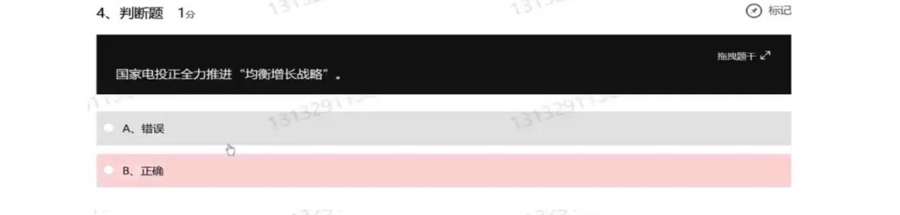
N20-001-2 · 默认展示版本
国家电投集团正全力推进“均衡增长战略”。
P1-001-1
国家电投集团正全力推进“均衡增长战略”。
P2-024-1
国家电投集团正全力推进“均衡增长战略”。
P4-054-1
1分
国家电投集团正全力推进“均衡增长战路”，
P7-002-1
国家电投集团正全力推进“均衡增长战略”。
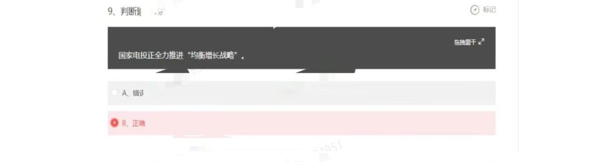
P8-027-2
国家电投集团正全力推进“均衡增长战略”。
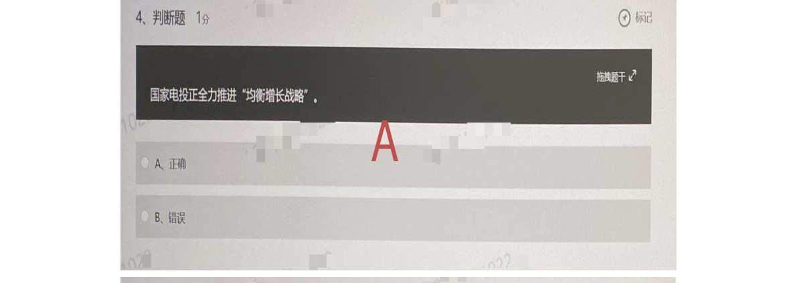
P9-029-1
国家电投集团正全力推进“均衡增长战略”。
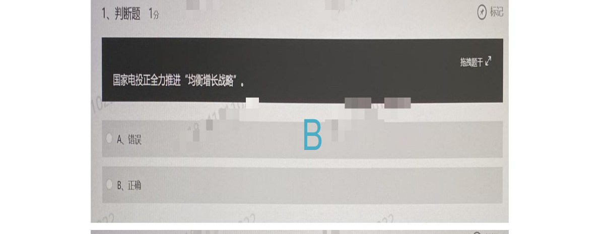
D117 · 5 个版本
国家电投集团拥有 （) 、 （)、 （)、 （)、煤电、气电、生物质发电等全部发电类型的能源企业。
N16-023-1 · 默认展示版本
国家电投集团拥有 （) 、 （)、 （)、 （)、煤电、气电、生物质发电等全部发电类型的能源企业。
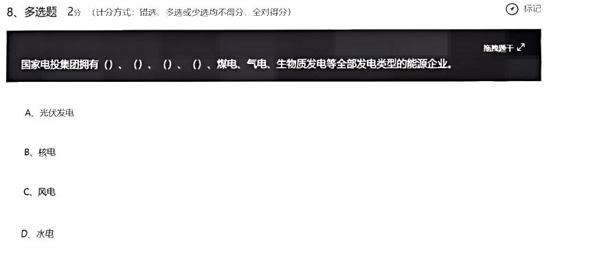
N17-020-1
国家电投集团拥有 （) 、 （)、 （)、 （)、煤电、气电、生物质发电等全部发电类型的能源企业。
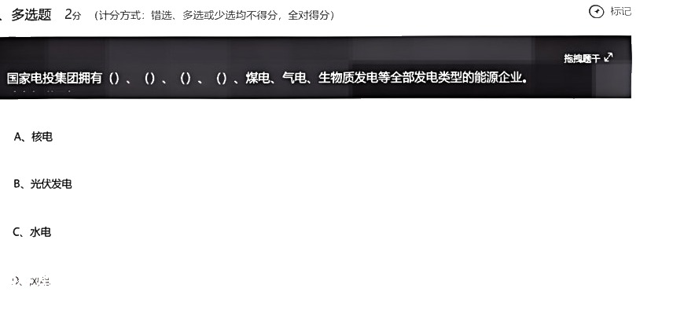
N20-004-1
国家电投集团拥有 （) 、 （)、 （)、 （)、煤电、气电、生物质发电等全部发电类型的能源企业。
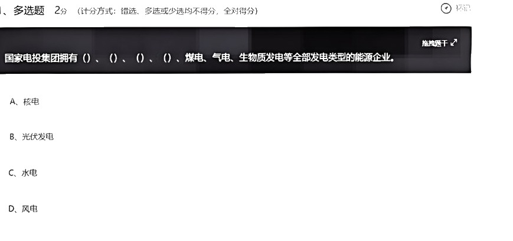
P1-001-4
国家电投集团拥有 （) 、 （)、 （)、 （)、煤电、气电、生物质发电等全部发电类型的能源企业。
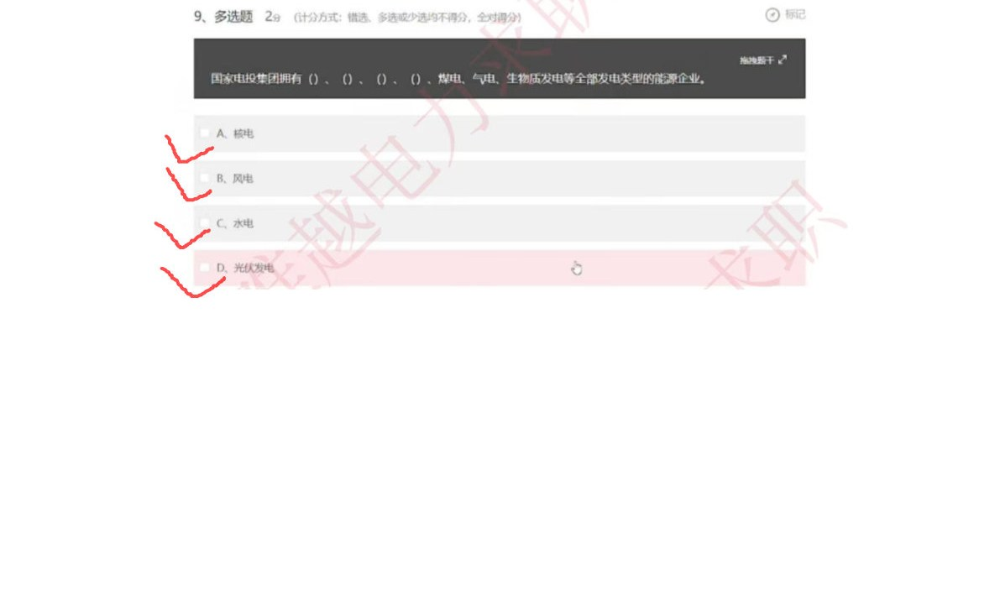
P2-023-3
国家电投集团拥有（)、0、0、0)、煤电、气电、生物质发电等全部发电类型的能源企业。
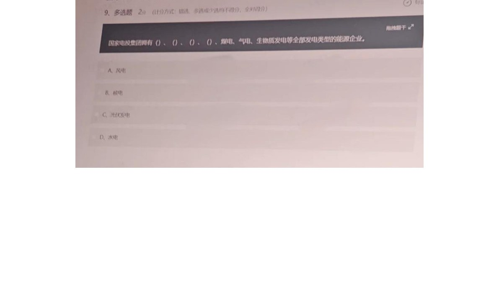
D235 · 2 个版本
①大气层中的二氧化碳是主要的温室气体，它可以减少地表热量向空间散失，使大气层保持一定的热能
②这一预测是以近年来地球气温升高的现象和温室效应为依据的
③最新的一项研究表明，到本世纪末，地球平均气温将比现在升高3℃
④二氧化碳在大气层中的含量直接影响着地表气温
⑤温室效应，在物理学上是指透射阳光的密闭空间由于与外界缺乏对流等热交换而产生的保温效应
⑥当大气层中
P1-005-3 · 默认展示版本
①大气层中的二氧化碳是主要的温室气体，它可以减少地表热量向空间散失，使大气层保持一定的热能
②这一预测是以近年来地球气温升高的现象和温室效应为依据的
③最新的一项研究表明，到本世纪末，地球平均气温将比现在升高3℃
④二氧化碳在大气层中的含量直接影响着地表气温
⑤温室效应，在物理学上是指透射阳光的密闭空间由于与外界缺乏对流等热交换而产生的保温效应
⑥当大气层中的二氧化碳增加时，地表气温就相应升高
将以上句子组成一段逻辑连贯、语言流畅的文字，排序最恰当的一项是（ ）。
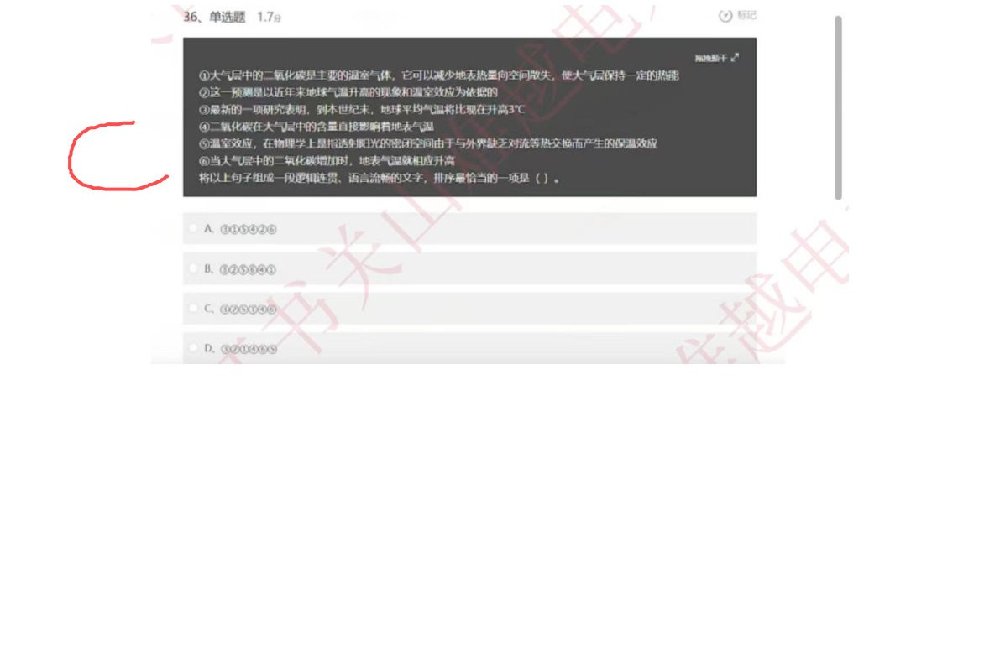
P3-009-1
①大气层中的二氧化碳是主要的温室气体，它可以减少地表热量向空间散失，使大气层保持一定的热能
②这一预测是以近年来地球气温升高的现象和温室效应为依据的
③最新的一项研究表明，到本世纪末，地球平均气温将比现在升高3℃
④二氧化碳在大气层中的含量直接影响着地表气温
⑤温室效应，在物理学上是指透射阳光的密闭空间由于与外界缺乏对流等热交换而产生的保温效应
⑥当大气层中的二氧化碳增加时，地表气温就相应升高
将以上句子组成一段逻辑连贯、语言流畅的文字，排序最恰当的一项是（ ）。
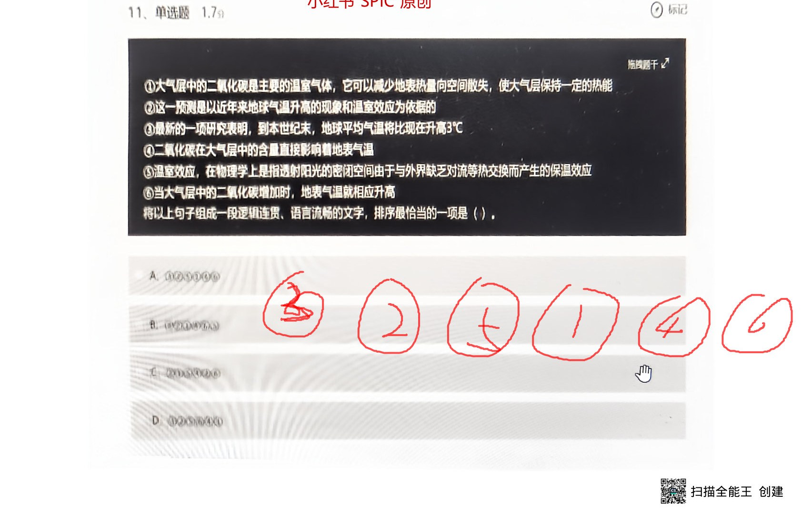
D236 · 2 个版本
随着互联网的迅猛发展，新型传播方式不断涌现，政府的施政环境发生深刻变化，奥情事件频发多发，加强政务公
开、做好政务舆情回应日益成为政府提升治理能力的内在要求。这体现了（）。
P1-008-1 · 默认展示版本
随着互联网的迅猛发展，新型传播方式不断涌现，政府的施政环境发生深刻变化，奥情事件频发多发，加强政务公
开、做好政务舆情回应日益成为政府提升治理能力的内在要求。这体现了（）。
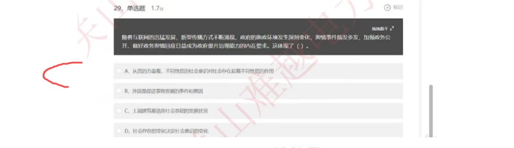
P3-035-1
随着互联网的迅猛发展，新型传播方式不断涌现，政府的施政环境发生深刻变化，舆情事件频发多发，加强政务公
开、做好政务舆情回应日益成为政府提升治理能力的内在要求。这体现了（）。
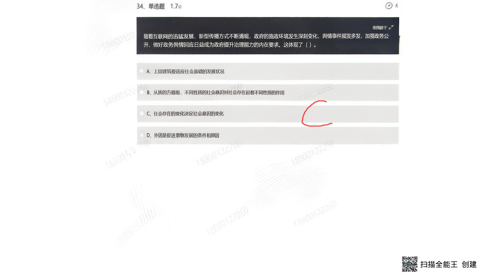
D080 · 3 个版本
互联网中介的倒闭，首先源于其过度信赖互联网在其他领域成功的“补贴”模式，但没有认识到房地产交易低频、非标的（）；其次，所谓互联网创新，实质是高薪高提成挖经纪人、低佣金的（），没有对行业形成实质性变革影响：而经济大环境的不确定性则加速了其（）的进度。
依次填入括号内最恰当的一组词语是（）。
N15-002-4 · 默认展示版本
互联网中介的倒闭，首先源于其过度信赖互联网在其他领域成功的“补贴”模式，但没有认识到房地产交易低频、非标的（）；其次，所谓互联网创新，实质是高薪高提成挖经纪人、低佣金的（），没有对行业形成实质性变革影响：而经济大环境的不确定性则加速了其（）的进度。
依次填入括号内最恰当的一组词语是（）。
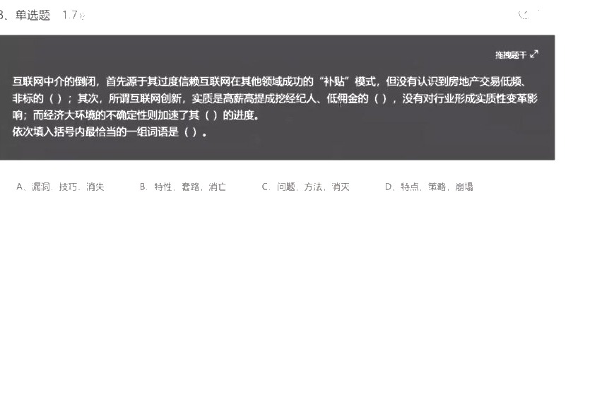
P1-010-2
互联网中介的倒闭，首先源于其过度信赖互联网在其他领域成功的“补贴”模式，但没有认识到房地产交易低频、
非标的（）：其次，所谓互联网创新，实质是高薪高提成挖经纪人、低佣金的（），没有对行业形成实质性变革影
响：而经济大环境的不确定性则加速了其（）的进度。
依次填入括号内最恰当的一组词语是（）。
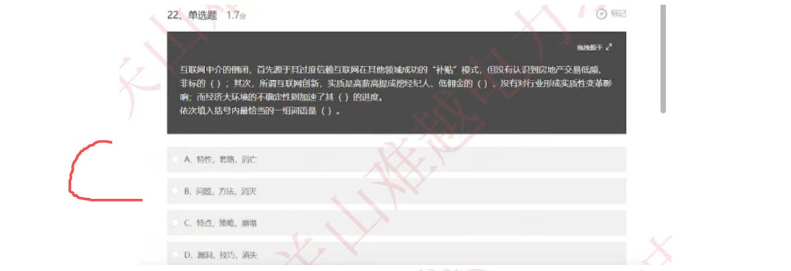
P10-002-5
互联网中介的倒闭，首先源于其过度信赖互联网在其他领域成功的“补贴”模式，但没有认识到房地产交易低频、非标的（）；其次，所谓互联网创新，实质是高薪高提成挖经纪人、低佣金的（），没有对行业形成实质性变革影响：而经济大环境的不确定性则加速了其（）的进度。
依次填入括号内最恰当的一组词语是（）。
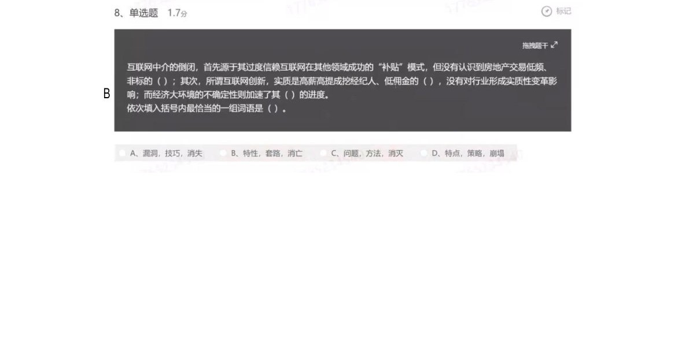
D237 · 4 个版本
2020年我国对“一带一路”沿线国家出口额同比约增长（）。
N14-011-2
7分
2020年我国对“一带一路”沿线国家出口额同比约增长（）。
D
P1-011-2
2020年我国对“一带一路”沿线国家出口额同比约增长（ ）。
P11-011-2 · 默认展示版本
2020年我国对“一带一路”沿线国家出口额同比约增长（）。
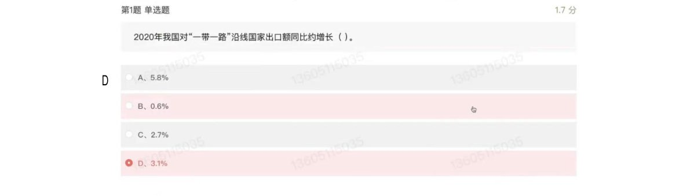
P3-020-2
2020年我国对“一带一路”沿线国家出口额同比约增长（ ）。
D124 · 5 个版本
某公司在业余时间组织员工进行足球比赛，已知小李进球的概率是75%，小王进球的概率是70%，问一场比赛中两人只有一人进球的概率是多少？（ ）
N17-006-3
某公司在业余时间组织员工进行足球比赛，已知小李进球的概率是75%，小王进球的概率是70%，问一场比赛中两人只有一人进球的概率是多少？（ ）
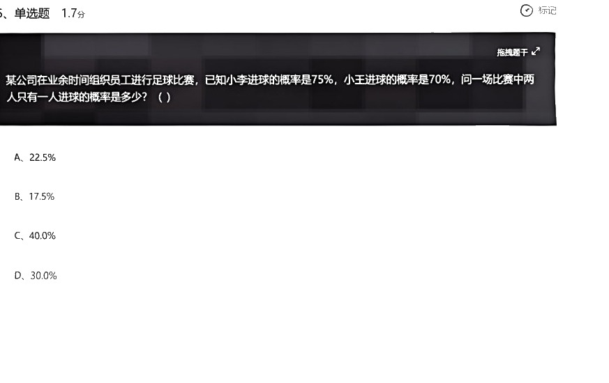
N29-038 · 默认展示版本
某公司在业余时间组织员工进行足球比赛，已知小李进球的概率是75%，小王进球的概率是70%，问一场比赛中两人只有一人进球的概率是多少？（ ）
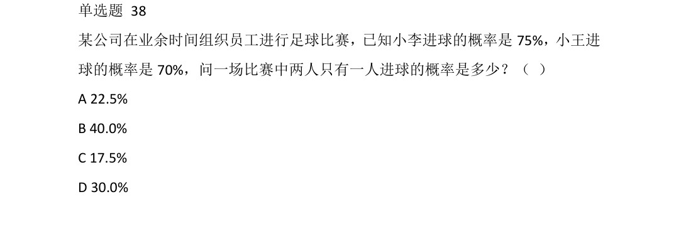
P1-013-1
某公司在业余时间组织员工进行足球比赛，已知小李进球的概率是75%，小王进球的概率是70%，问一场比赛中两人只有一人进球的概率是多少？（ ）
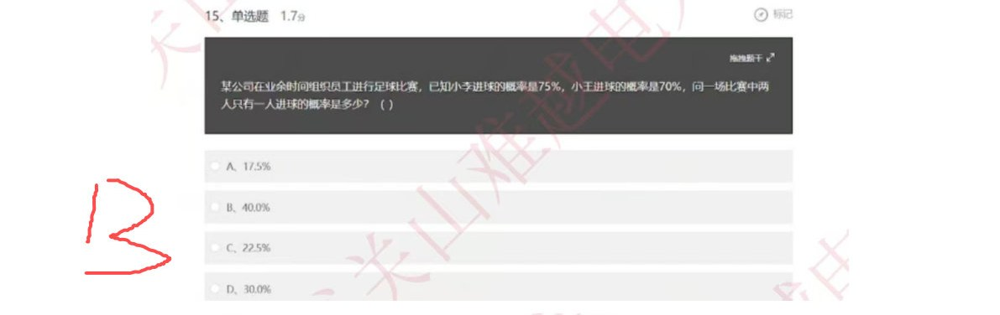
P7-005-3
某公司在业余时间组织员工进行足球比赛，已知小李进球的概率是75%，小王进球的概率是70%，问一场比赛中两
人只有一人进球的概率是多少？（）
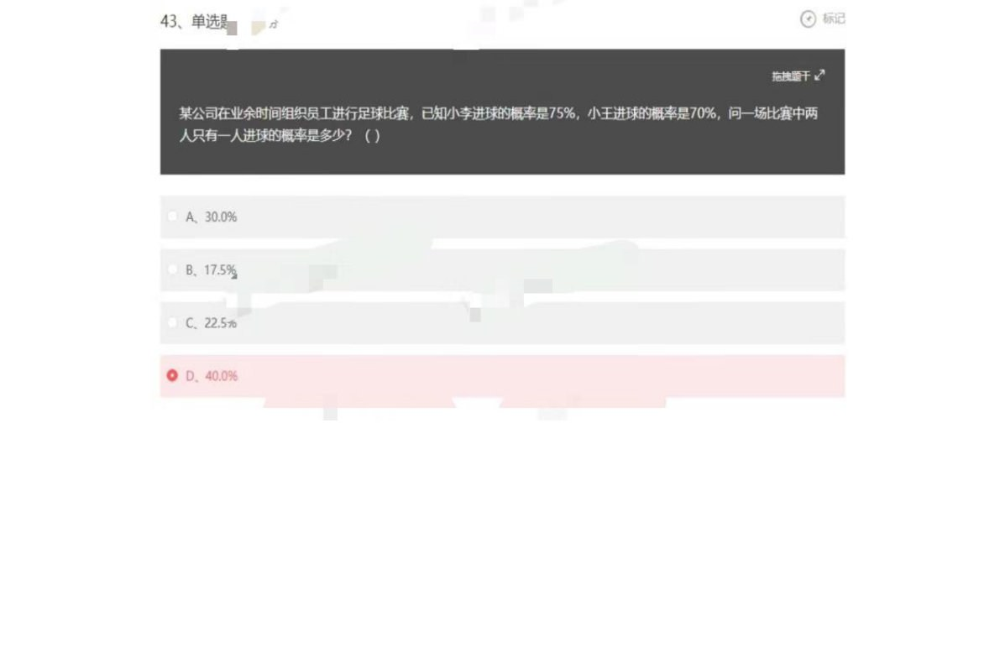
P8-024-2
某公司在业余时间组织员工进行足球比赛，已知小李进球的概率是75%，小王进球的概率是70%，问一场比赛中两人只有一人进球的概率是多少？（ ）
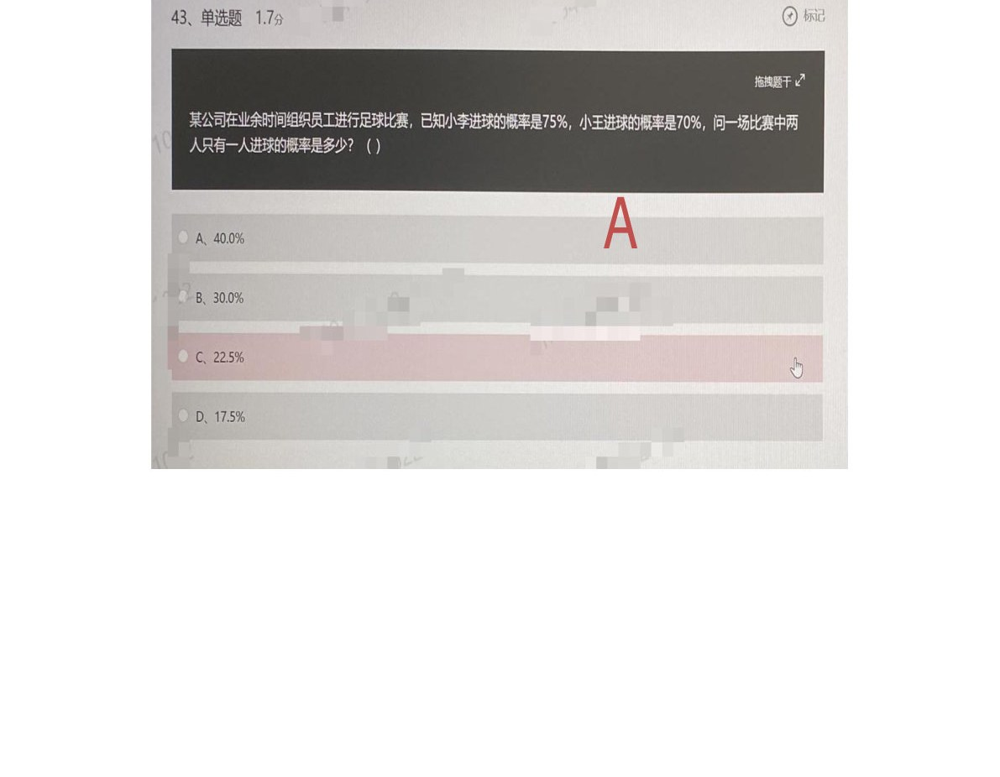
D156 · 3 个版本
碳达峰碳中和是当前及今后几十年我国绿色低碳发展转型面临的重大课题。今天，我们所面临的生态环境问题、气候变化问题，都与高消耗、高排放的经济社会发展方式、不合理的产业结构、能源结构密切相关，解决这些问题，需要抓源头、抓根本。我们要以科技创新为驱动，加快产业结构、能源结构、交通运输结构和用地结构调整，坚决遏制高耗能、高排放、低水平项目盲目发展，大力发展新能源和清洁
N29-002 · 默认展示版本
碳达峰碳中和是当前及今后几十年我国绿色低碳发展转型面临的重大课题。今天，我们所面临的生态环境问题、气候变化问题，都与高消耗、高排放的经济社会发展方式、不合理的产业结构、能源结构密切相关，解决这些问题，需要抓源头、抓根本。我们要以科技创新为驱动，加快产业结构、能源结构、交通运输结构和用地结构调整，坚决遏制高耗能、高排放、低水平项目盲目发展，大力发展新能源和清洁能源，大力倡导绿色消费，深入推进资源节约集约利用，让节能降碳理念深入人心，让绿色生活蔚然成风。 这段文字旨在说明（ ）。
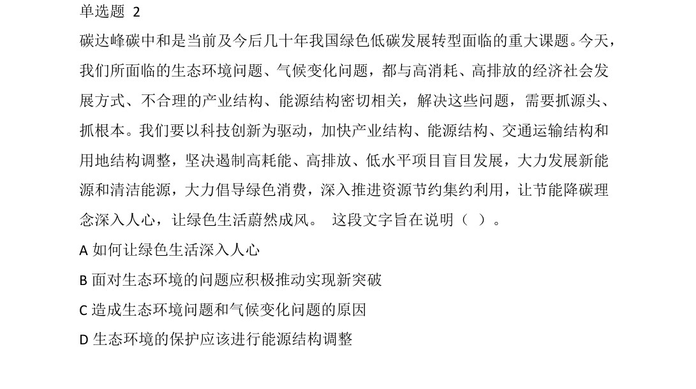
P1-013-2
碳达峰碳中和是当前及今后几十年我国绿色低碳发展转型面临的重大课题。今天，我们所面临的生态环境问题、气候变化问题，都与高消耗、高排放的经济社会发展方式、不合理的产业结构、能源结构密切相关，解决这些问题，需要抓源头、抓根本。我们要以科技创新为驱动，加快产业结构、能源结构、交通运输结构和用地结构调整，坚决遏制高耗能、高排放、低水平项目盲目发展，大力发展新能源和清洁能源，大力倡导绿色消费，深入推进资源节约集约利用，让节能降碳理念深入人心，让绿色生活蔚然成风。 这段文字旨在说明（ ）。
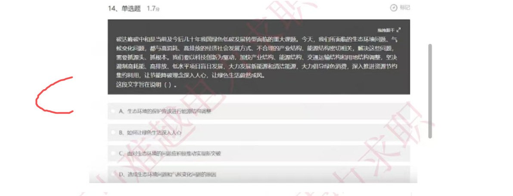
P7-010-2
碳达峰碳中和是当前及今后几十年我国绿色低碳发展转型面临的重大课题。今天，我们所面临的生态环境问题、气候变化问题，都与高消耗、高排放的经济社会发展方式、不合理的产业结构、能源结构密切相关，解决这些问题，需要抓源头、抓根本。我们要以科技创新为驱动，加快产业结构、能源结构、交通运输结构和用地结构调整，坚决遏制高耗能、高排放、低水平项目盲目发展，大力发展新能源和清洁能源，大力倡导绿色消费，深入推进资源节约集约利用，让节能降碳理念深入人心，让绿色生活蔚然成风。这段文字旨在说明（）。
D181 · 5 个版本
业
②不仅加强工信部对领域数据安全总体统筹与监督管理责任分工，也充分考虑了工信领域管理的共性需求与实践差
异
③工信部提出，在未来三年里，围绕100个细分行业，打算扶持和培育数字化转型服务平台，打造“小灯塔”工厂
①根据“市场有需求，平台有能力，企业有意愿”的三结合原则来做数字化转型，是一种有益探索
③数字化转型离不开有为政府的支持，同时也需要与有效市场相结
N16-016-1 · 默认展示版本
业
②不仅加强工信部对领域数据安全总体统筹与监督管理责任分工，也充分考虑了工信领域管理的共性需求与实践差
异
③工信部提出，在未来三年里，围绕100个细分行业，打算扶持和培育数字化转型服务平台，打造“小灯塔”工厂
①根据“市场有需求，平台有能力，企业有意愿”的三结合原则来做数字化转型，是一种有益探索
③数字化转型离不开有为政府的支持，同时也需要与有效市场相结合
将以上句子组成一段逻辑连贯、语言流畅的文字，排序最恰当的一项是（）。
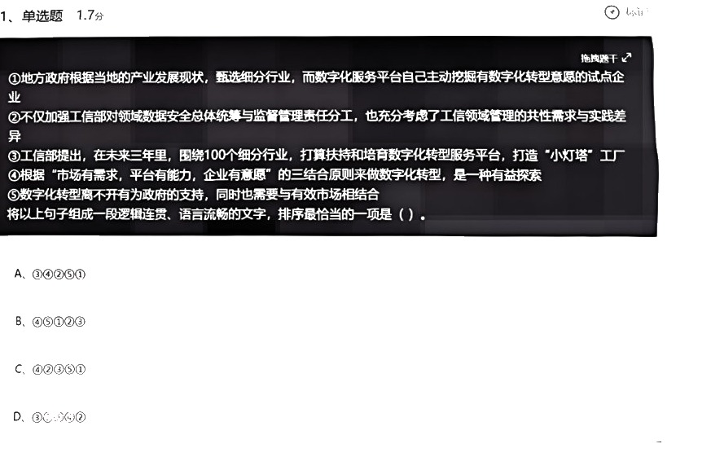
P1-014-2
①地方政府根据当地的产业发展现状，甄选细分行业，而数字化服务平台自己主动挖掘有数字化转型意愿的试点企业
②不仅加强工信部对领域数据安全总体统筹与监督管理责任分工，也充分考虑了工信领域管理的共性需求与实践差异
③工信部提出，在未来三年里，围绕100个细分行业，打算扶持和培育数字化转型服务平台，打造“小灯塔”工厂
④根据“市场有需求，平台有能力，企业有意愿”的三结合原则来做数字化转型，是一种有益探索
⑤数字化转型离不开有为政府的支持，同时也需要与有效市场相结合
将以上句子组成一段逻辑连贯、语言流畅的文字，排序最恰当的一项是（ ）。
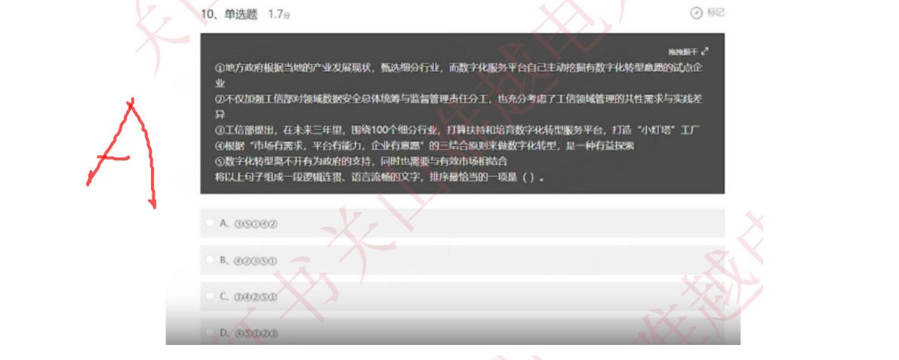
P2-001-1
①地方政府根据当地的产业发展现状，甄选细分行业，而数字化服务平台自己主动挖掘有数字化转型意愿的试点企业
②不仅加强工信部对领域数据安全总体统筹与监督管理责任分工，也充分考虑了工信领域管理的共性需求与实践差异
③工信部提出，在未来三年里，围绕100个细分行业，打算扶持和培育数字化转型服务平台，打造“小灯塔”工厂
④根据“市场有需求，平台有能力，企业有意愿”的三结合原则来做数字化转型，是一种有益探索
⑤数字化转型离不开有为政府的支持，同时也需要与有效市场相结合
将以上句子组成一段逻辑连贯、语言流畅的文字，排序最恰当的一项是（ ）。
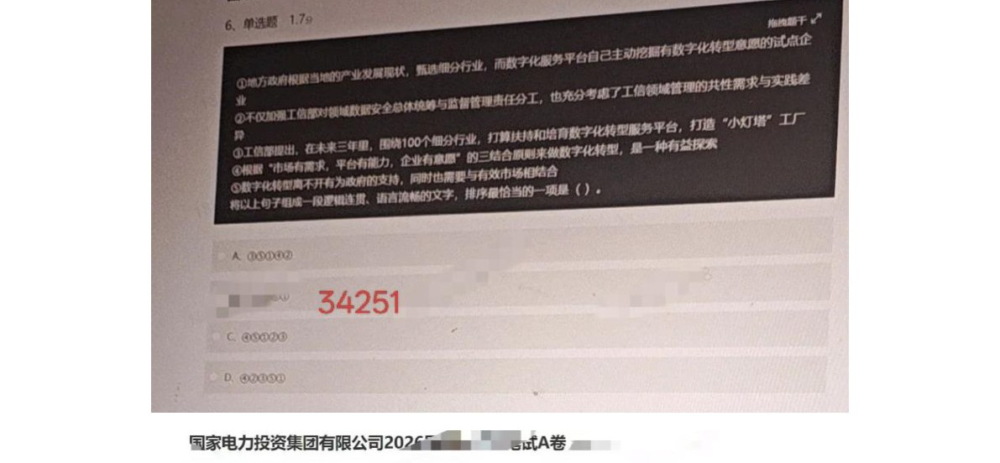
P2-013-1
①地方政府根据当地的产业发展现状，甄选细分行业，而数字化服务平台自己主动挖掘有数字化转型意愿的试点企业
②不仅加强工信部对领域数据安全总体统筹与监督管理责任分工，也充分考虑了工信领域管理的共性需求与实践差异
③工信部提出，在未来三年里，围绕100个细分行业，打算扶持和培育数字化转型服务平台，打造“小灯塔”工厂
④根据“市场有需求，平台有能力，企业有意愿”的三结合原则来做数字化转型，是一种有益探索
⑤数字化转型离不开有为政府的支持，同时也需要与有效市场相结合
将以上句子组成一段逻辑连贯、语言流畅的文字，排序最恰当的一项是（ ）。
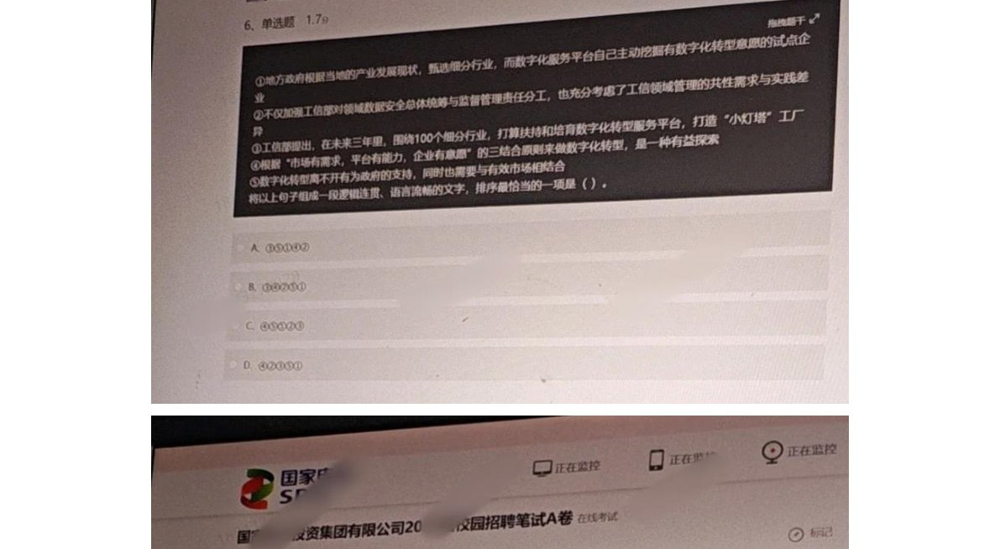
P4-039-1
①地方政府根据当地的产业发展现状，甄选细分行业，而数字化服务平台自己主动挖掘有数字化转型意愿的试点企业
②不仅加强工信部对领域数据安全总体统筹与监督管理责任分工，也充分考虑了工信领域管理的共性需求与实践差异
③工信部提出，在未来三年里，围绕100个细分行业，打算扶持和培育数字化转型服务平台，打造“小灯塔”工厂
④根据“市场有需求，平台有能力，企业有意愿”的三结合原则来做数字化转型，是一种有益探索
⑤数字化转型离不开有为政府的支持，同时也需要与有效市场相结合
将以上句子组成一段逻辑连贯、语言流畅的文字，排序最恰当的一项是（ ）。
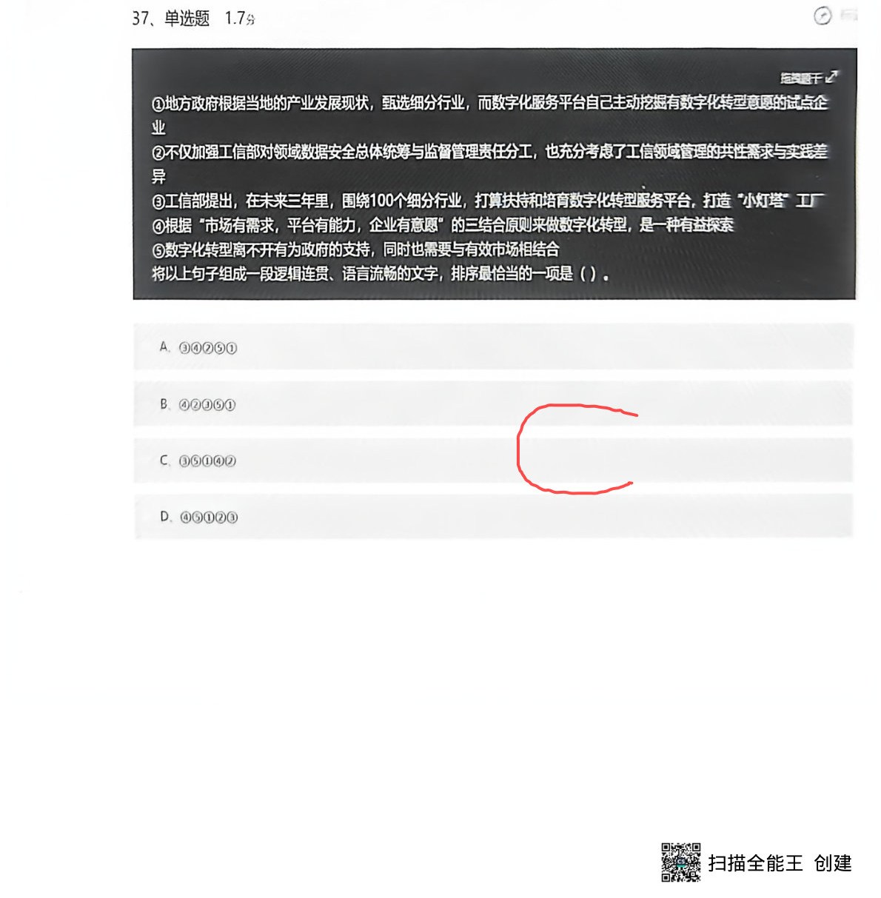
D238 · 2 个版本
发挥要素协同配置效应，促进各类生产要素协同互动。形成“新质生产力”，要求拥有（）庞大、（）优良、（
）合理、（）有效的科技、人才、数据等优质要素，并目建立起要素之间的协同机制，优化要配置，提升要素效
率。
依次填入括号处最恰当的一项是（）。
P1-015-2 · 默认展示版本
发挥要素协同配置效应，促进各类生产要素协同互动。形成“新质生产力”，要求拥有（）庞大、（）优良、（
）合理、（）有效的科技、人才、数据等优质要素，并目建立起要素之间的协同机制，优化要配置，提升要素效
率。
依次填入括号处最恰当的一项是（）。
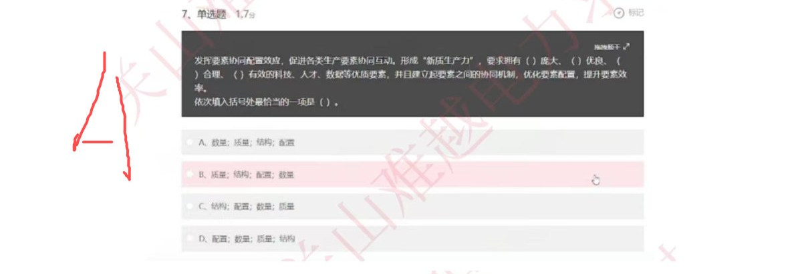
P7-006-2
发挥要素协同配置效应，促进各类生产要素协同互动。形成“新质生产力”，要求拥有（）庞大、（）优良、（
）合理、（）有效的科技、人才、数据等优质要素，并且建立起要素之间的协同机制，优化要素配置，提升要素效
率。
依次填入括号处最恰当的一项是（）
D183 · 3 个版本
①中国互联网新闻中心艺术中国主编许柏成介绍，这部系列纪录片的第一季从丰富的中华文明宝库中选择了100个代表性元素
②从故宫红墙到江南水乡，从敦煌大漠到丘陵茶园，展现中国大江南北人文自然景观的画面，牢牢吸引了与会嘉宾的眼球
③中国互联网新闻中心出品的中英文短纪录片《万象中国》第一季片花在论坛现场播放时，引发关注
④第一季的国内总播放量达8000万以上，海外总接
P1-017-1 · 默认展示版本
①中国互联网新闻中心艺术中国主编许柏成介绍，这部系列纪录片的第一季从丰富的中华文明宝库中选择了100个代表性元素
②从故宫红墙到江南水乡，从敦煌大漠到丘陵茶园，展现中国大江南北人文自然景观的画面，牢牢吸引了与会嘉宾的眼球
③中国互联网新闻中心出品的中英文短纪录片《万象中国》第一季片花在论坛现场播放时，引发关注
④第一季的国内总播放量达8000万以上，海外总接触量达1200万以上
⑤以小见大，展现了中国人独特的价值体系、文化内涵和精神品质
将以上句子组成一段逻辑连贯、语言流畅的文字，排序最恰当的一项是（ ）。
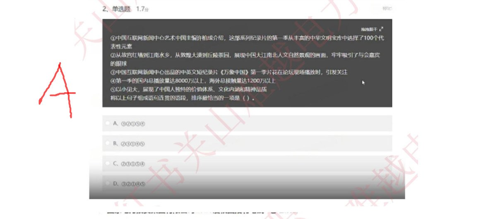
P5-007-1
①中国互联网新闻中心艺术中国主编许柏成介绍，这部系列纪录片的第一季从丰富的中华文明宝库中选择了100个代表性元素
②从故宫红墙到江南水乡，从敦煌大漠到丘陵茶园，展现中国大江南北人文自然景观的画面，牢牢吸引了与会嘉宾的眼球
③中国互联网新闻中心出品的中英文短纪录片《万象中国》第一季片花在论坛现场播放时，引发关注
④第一季的国内总播放量达8000万以上，海外总接触量达1200万以上
⑤以小见大，展现了中国人独特的价值体系、文化内涵和精神品质
将以上句子组成一段逻辑连贯、语言流畅的文字，排序最恰当的一项是（ ）。
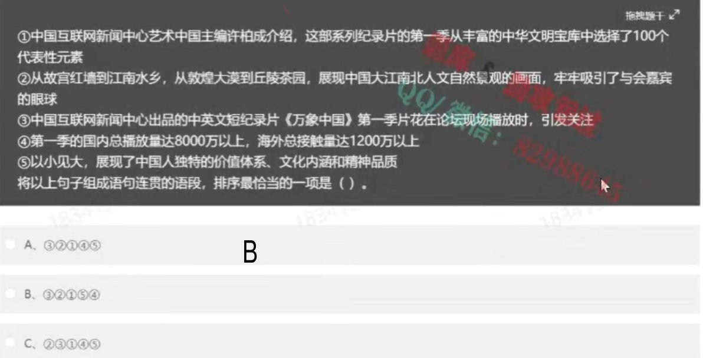
P9-014-2
①中国互联网新闻中心艺术中国主编许柏成介绍，这部系列纪录片的第一季从丰富的中华文明宝库中选择了100个代表性元素
②从故宫红墙到江南水乡，从敦煌大漠到丘陵茶园，展现中国大江南北人文自然景观的画面，牢牢吸引了与会嘉宾的眼球
③中国互联网新闻中心出品的中英文短纪录片《万象中国》第一季片花在论坛现场播放时，引发关注
④第一季的国内总播放量达8000万以上，海外总接触量达1200万以上
⑤以小见大，展现了中国人独特的价值体系、文化内涵和精神品质
将以上句子组成一段逻辑连贯、语言流畅的文字，排序最恰当的一项是（ ）。
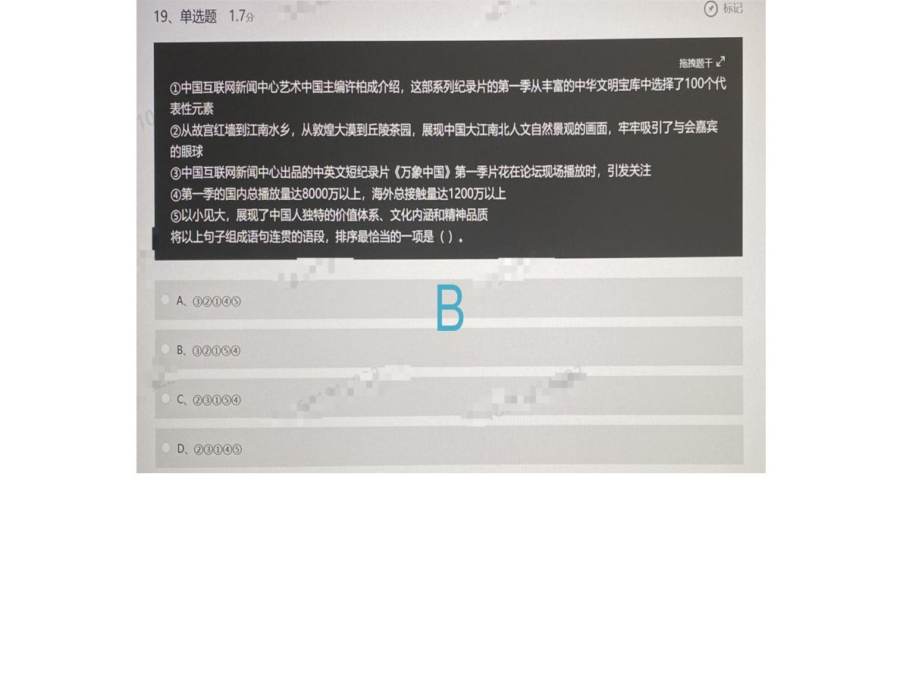
D011 · 5 个版本
某能源公司在团建中设置了10个环节，员工需要从中随机抽取5个环节进行比赛，若5个环节全部胜出，则挑战成功，否则失败。已知A员工有8项比赛必胜，2项比赛必败。则A员工挑战成功的概率为（）。
N13-006-2 · 默认展示版本
某能源公司在团建中设置了10个环节，员工需要从中随机抽取5个环节进行比赛，若5个环节全部胜出，则挑战成功，否则失败。已知A员工有8项比赛必胜，2项比赛必败。则A员工挑战成功的概率为（）。
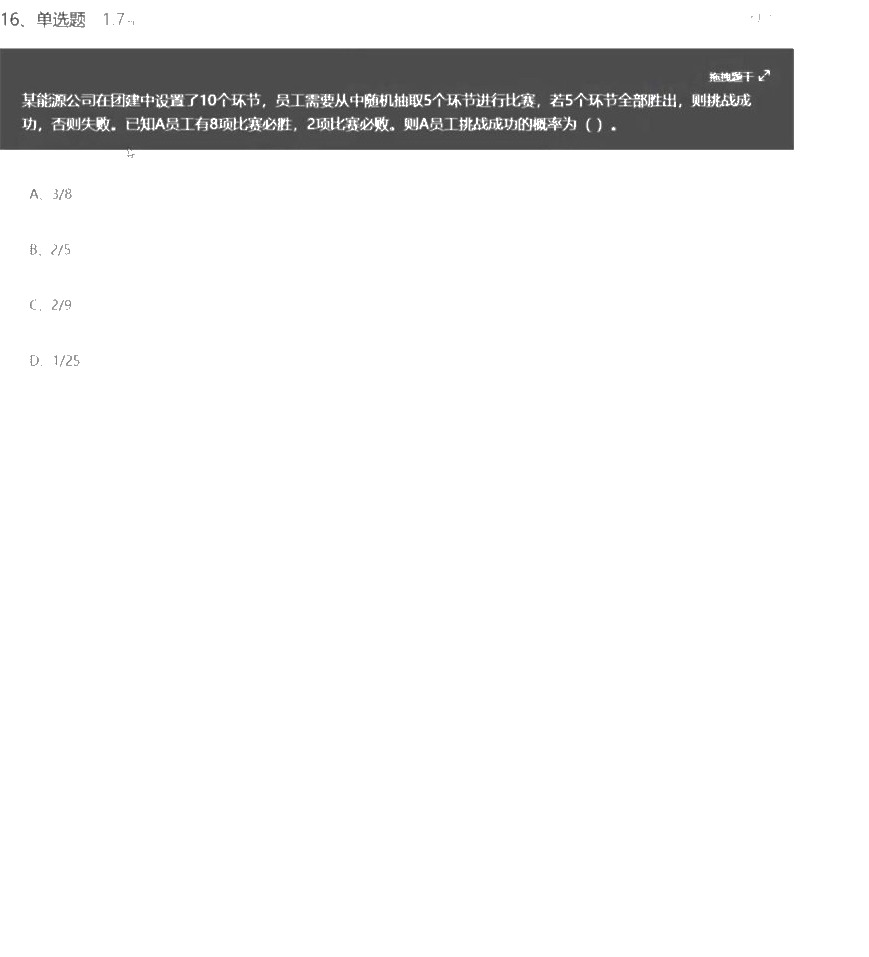
N16-002-1
某能源公司在团建中设置了10个环节，员工需要从中随机抽取5个环节进行比赛，若5个环节全部胜出，则挑战成功，否则失败。已知A员工有8项比赛必胜，2项比赛必败。则A员工挑战成功的概率为（）。
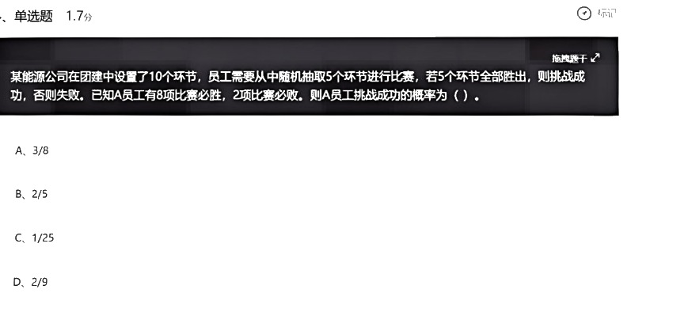
P12-006-2
某能源公司在团建中设置了10个环节，员工需要从中随机抽取5个环节进行比赛，若5个环节全部胜出，则挑战成功，否则失败。已知A员工有8项比赛必胜，2项比赛必败。则A员工挑战成功的概率为（）。
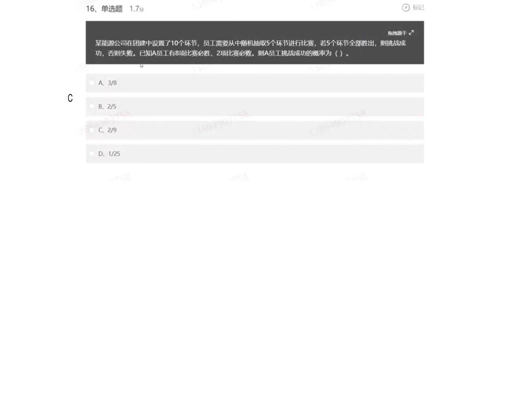
P2-002-1
某能源公司在团建中设置了10个环节，员工需要从中随机抽取5个环节进行比赛，若5个环节全部胜出，挑战成
功，否则失败，已知A员工有8项比赛必胜，2项比赛必败。则A员工挑战成功的概率为（）。
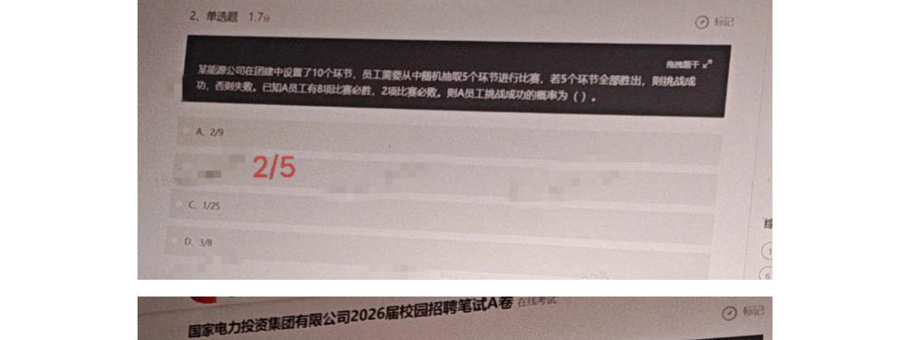
P5-005-3
某能源公司在团建中设置了10个环节，员工需要从中随机抽取5个环节进行比赛，若5个环节全部胜出，则挑战成功，否则失败。已知A员工有8项比赛必胜，2项比赛必败。则A员工挑战成功的概率为（）。
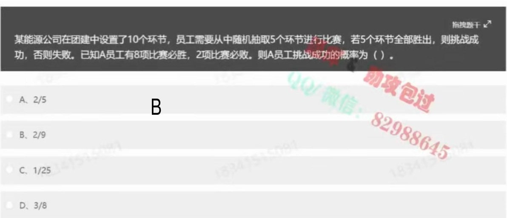
D191 · 5 个版本
①作为第四批江苏省级非物质文化遗产代表性项目，吴江七都木偶昆曲以昆曲为媒介，以人偶为形式
②但“木偶昆曲”的形式，对大多数人来说还是挺新鲜的
③提起“昆曲”或“木偶戏”，大家并不陌生
④演绎出“双手提活生旦净丑千般态，一腔唱妙喜怒哀乐百样声”的文化魅力
⑤脍炙人口的《西厢记》《牡丹亭》《长生殿》等，至今常演不衰
将以上句子组成一段逻辑连贯、语言流畅的文字，排
N13-015-2
①作为第四批江苏省级非物质文化遗产代表性项目，吴江七都木偶昆曲以昆曲为媒介，以人偶为形式
②但“木偶昆曲”的形式，对大多数人来说还是挺新鲜的
③提起“昆曲”或“木偶戏”，大家并不陌生
脍炙人口的《西厢记》《牡丹亭》《长生殿》等，至今常演不衰
将以上句子组成语句连贯的语段，排序最恰当的一项是（）。
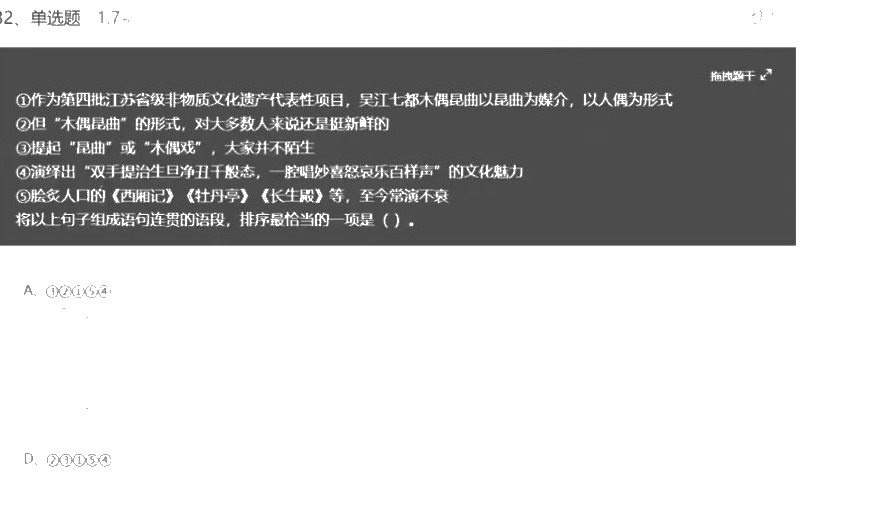
P12-015-2
①作为第四批江苏省级非物质文化遗产代表性项目，吴江七都木偶昆曲以昆曲为媒介，以人偶为形式
②但“木偶昆曲”的形式，对大多数人来说还是挺新鲜的
③提起“昆曲”或“木偶戏”，大家并不陌生
④演绎出“双手提活生旦净丑千般态，一腔唱妙喜怒哀乐百样声”的文化魅力
⑤脍炙人口的《西厢记》《牡丹亭》《长生殿》等，至今常演不衰
将以上句子组成一段逻辑连贯、语言流畅的文字，排序最恰当的一项是（ ）。
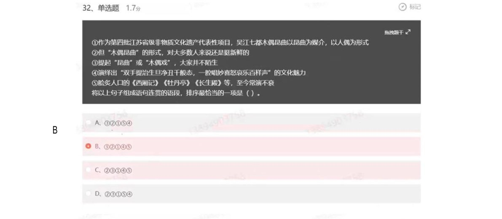
P2-005-1 · 默认展示版本
①作为第四批江苏省级非物质文化遗产代表性项目，吴江七都木偶昆曲以昆曲为媒介，以人偶为形式
②但“木偶昆曲”的形式，对大多数人来说还是挺新鲜的
③提起“昆曲”或“木偶戏”，大家并不陌生
④演绎出“双手提活生旦净丑千般态，一腔唱妙喜怒哀乐百样声”的文化魅力
⑤脍炙人口的《西厢记》《牡丹亭》《长生殿》等，至今常演不衰
将以上句子组成一段逻辑连贯、语言流畅的文字，排序最恰当的一项是（ ）。
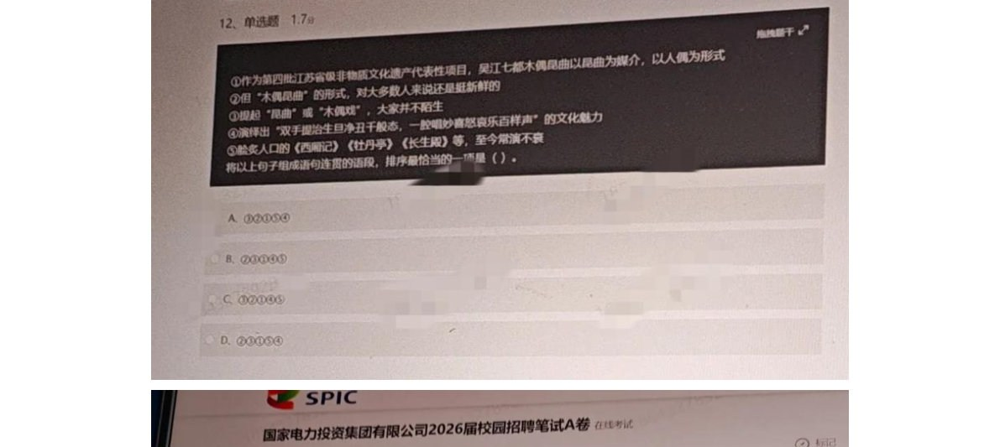
P2-012-2
①作为第四批江苏省级非物质文化遗产代表性项目，吴江七都木偶昆曲以昆曲为媒介，以人偶为形式
②但“木偶昆曲”的形式，对大多数人来说还是挺新鲜的
③提起“昆曲”或“木偶戏”，大家并不陌生
④演绎出“双手提活生旦净丑千般态，一腔唱妙喜怒哀乐百样声”的文化魅力
⑤脍炙人口的《西厢记》《牡丹亭》《长生殿》等，至今常演不衰
将以上句子组成一段逻辑连贯、语言流畅的文字，排序最恰当的一项是（ ）。
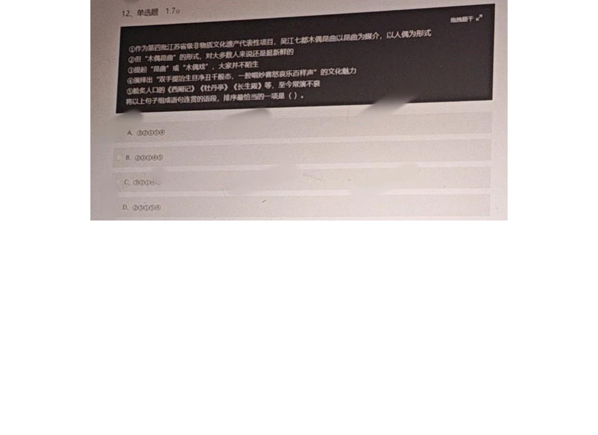
P5-011-2
①作为第四批江苏省级非物质文化遗产代表性项目，吴江七都木偶昆曲以昆曲为媒介，以人偶为形式
②但“木偶昆曲”的形式，对大多数人来说还是挺新鲜的
③提起“昆曲”或“木偶戏”，大家并不陌生
炙人口的《西厢记》《牡丹亭》《长生殿》等，至今常演不衰
将以上句子组成语句连贯的语段，排序最恰当的一项是（）。
88645
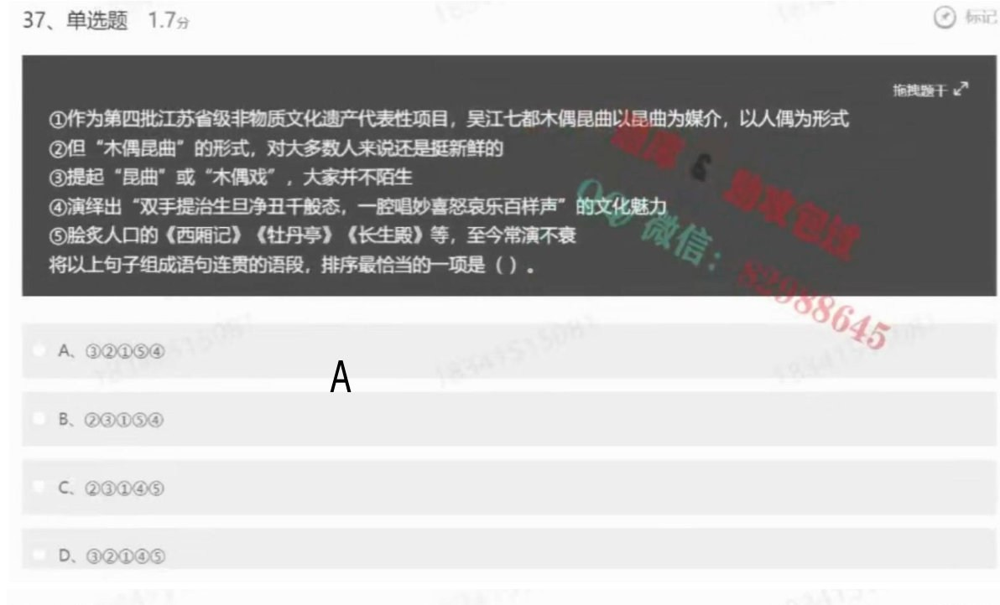
D239 · 2 个版本
某公司接到一批生产订单，由甲生产线单独生产的话，8天可以完成。为保障交货期，另外增加乙生产线，与甲生产
线共同生产4天完成了75%。若剩余部分由乙生产线单独生产，则还需要（）天完成。
P2-009-2 · 默认展示版本
某公司接到一批生产订单，由甲生产线单独生产的话，8天可以完成。为保障交货期，另外增加乙生产线，与甲生产
线共同生产4天完成了75%。若剩余部分由乙生产线单独生产，则还需要（）天完成。
P4-044-1
际
危鸽题干2
某公司接到一批生产订单，由甲生产线单独生产的话，8天可以完成。为保障交货期，另外增加乙生产线，与甲生产
线共同生产4天完成了75%。若剩余部分由乙生产线单独生产，则还需要（）天完成。
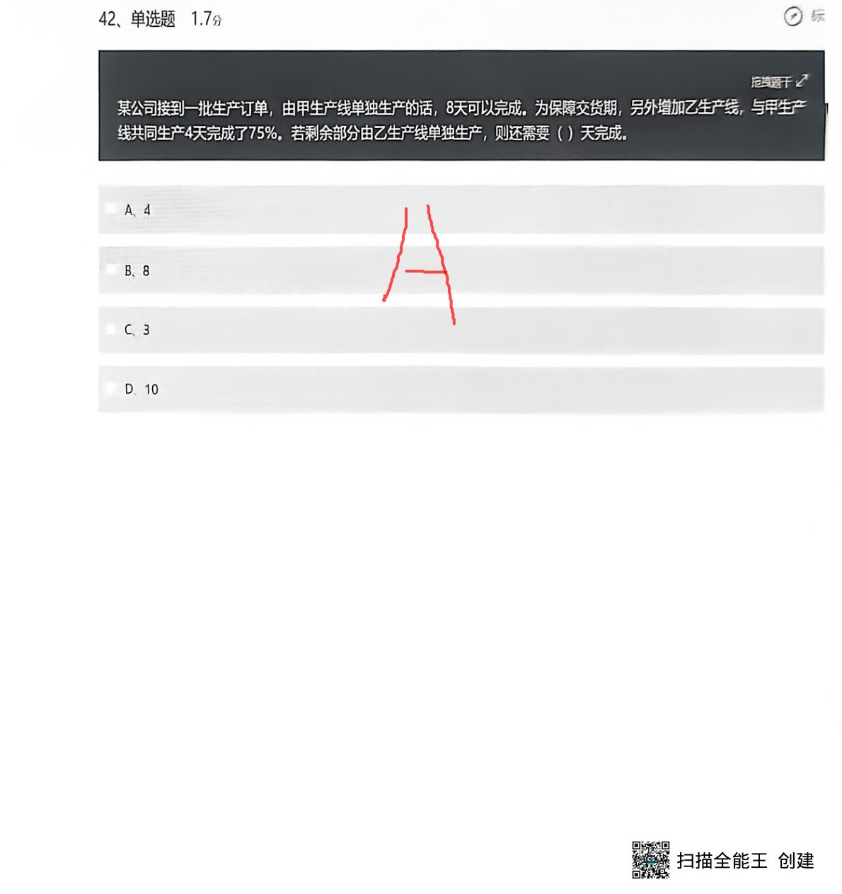
D240 · 2 个版本
某公司生产一批产品，其中一等品20件，二等品9件，若从该批产品中随机抽取3件产品，则有且仅有一个二等品的
概率为（）
P2-016-1 · 默认展示版本
某公司生产一批产品，其中一等品20件，二等品9件，若从该批产品中随机抽取3件产品，则有且仅有一个二等品的
概率为（）
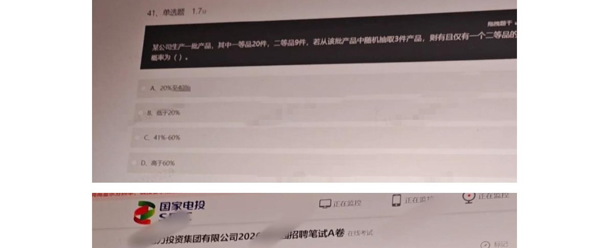
P9-018-2
某公司生产一批产品，其中一等品20件，二等品9件，若从该批产品中随机抽取3件产品，则有且仅有一个二等品的
概率为（）。
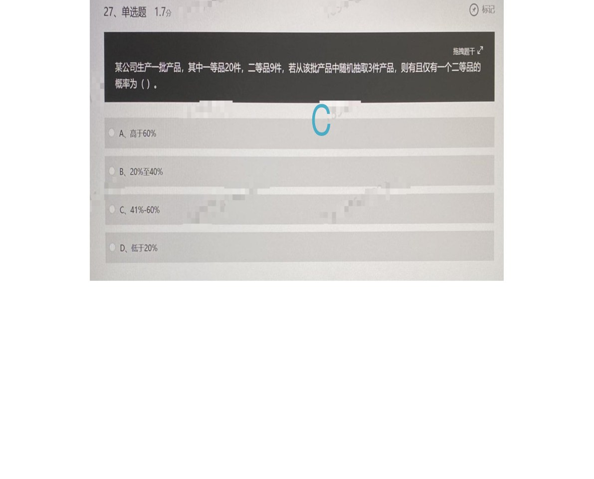
D241 · 2 个版本
①青少年的科学素养代表着一个国家的教育和科技水平，也决定了国家未来的发展潜力和发展方向
②将科学知识传递给青少年，激发青少年崇尚科学、涵养正确的科学思想与探究精神
③科普教育作为学校教育的重要补充，覆盖范围非常广泛
④让青少年体会到学习科学知识的快乐，是推进素质教育的有效举措，也是新时代人才培养的呼唤
③青少年是科学普及的重要对象
将以上句子组成语句连贯的语
N16-019-3 · 默认展示版本
①青少年的科学素养代表着一个国家的教育和科技水平，也决定了国家未来的发展潜力和发展方向
②将科学知识传递给青少年，激发青少年崇尚科学、涵养正确的科学思想与探究精神
③科普教育作为学校教育的重要补充，覆盖范围非常广泛
④让青少年体会到学习科学知识的快乐，是推进素质教育的有效举措，也是新时代人才培养的呼唤
③青少年是科学普及的重要对象
将以上句子组成语句连贯的语段，排序最恰当的一项是（）。
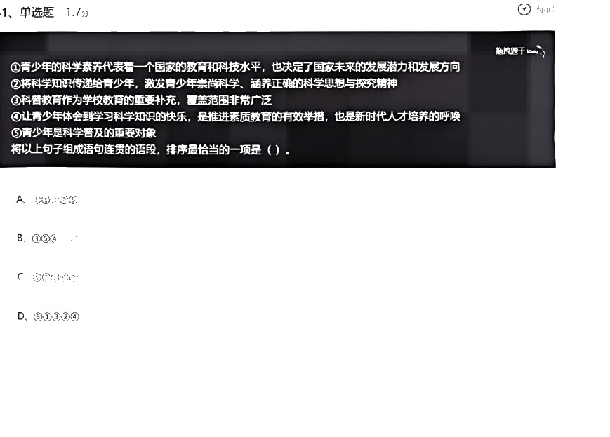
P2-016-2
①青少年的科学素养代表着一个国家的教育和科技水平，也决定了国家未来的发展潜力和发展方向
②将科学知识传递给青少年，激发青少年崇尚科学、涵养正确的科学思想与探究精神
③科普教育作为学校教育的重要补充，覆盖范围非常广泛
④让青少年体会到学习科学知识的快乐，是推进素质教育的有效举措，也是新时代人才培养的呼唤
⑤青少年是科学普及的重要对象
将以上句子组成一段逻辑连贯、语言流畅的文字，排序最恰当的一项是（ ）。
D242 · 2 个版本
共同富裕是社会主义的本质要求，是人民群众的共同期盼。客观来看，实现共同富裕是一个物质积票的过程，也是
一个精神（）的过程，两者（）、缺一不可。物质富裕是精神富足的基础，能够为精神文明建设提供物质条件；反
过来看，更高水平的精神文明建设，可以为物质文明建设提供精神动力。
填入括号处最恰当的一项是（）。
N16-016-2
共同富裕是社会主义的本质要求，是人民群众的共同期盼。客观来看，实现共同富裕是一个物质积累的过程，也是
一个精神（）的过程，两者（）、缺一不可。物质富裕是精神富足的基础，能够为精神文明建设提供物质条件；反
过来看，更高水平的精神文明建设，可以为物质文明建设提供精神动力。
填入括号处最恰当的一项是（）。
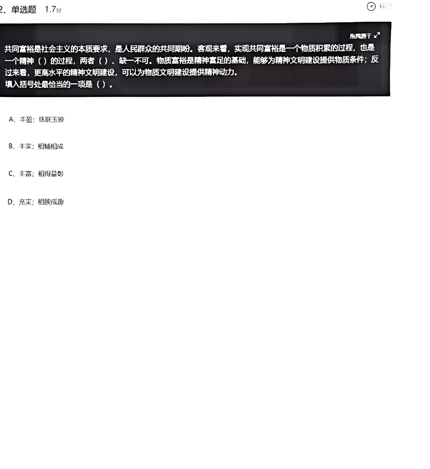
P2-017-2 · 默认展示版本
共同富裕是社会主义的本质要求，是人民群众的共同期盼。客观来看，实现共同富裕是一个物质积票的过程，也是
一个精神（）的过程，两者（）、缺一不可。物质富裕是精神富足的基础，能够为精神文明建设提供物质条件；反
过来看，更高水平的精神文明建设，可以为物质文明建设提供精神动力。
填入括号处最恰当的一项是（）。
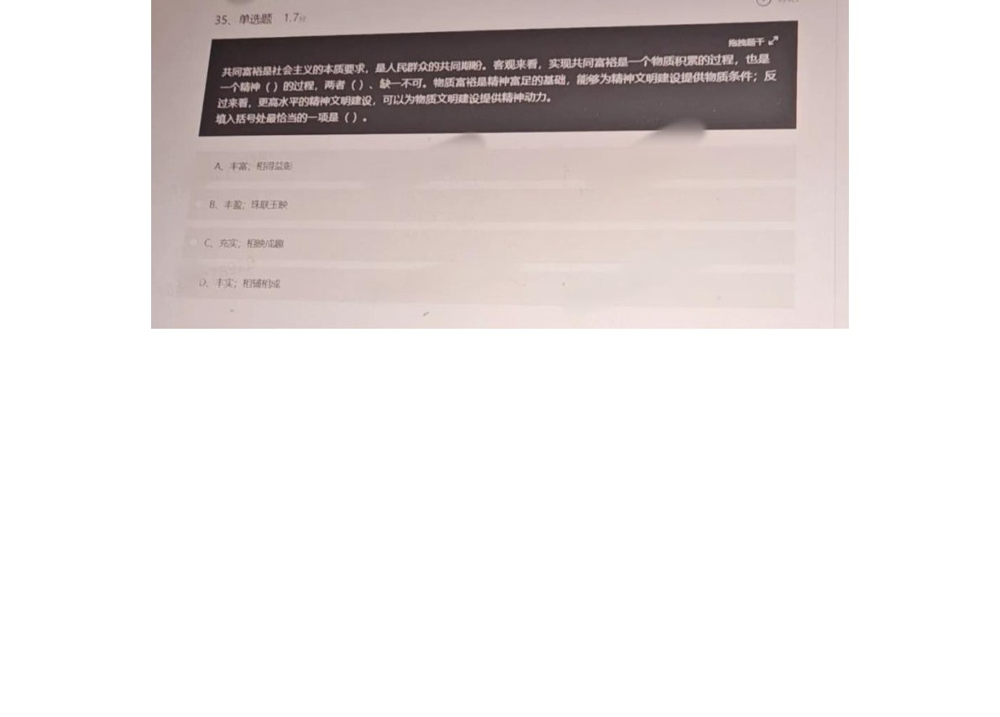
D198 · 4 个版本
“国和一号”是国家电投集团完全自主研制的核电技术品牌
N29-060
“国和一号”是国家电投集团完全自主研制的核电技术品牌。
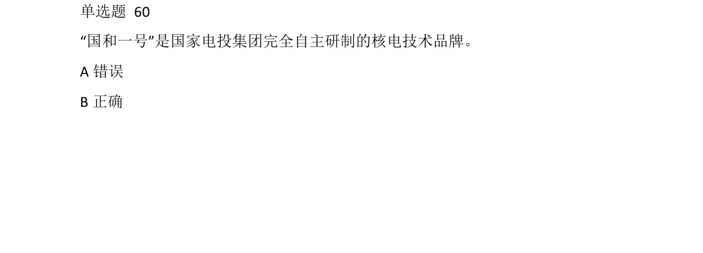
P2-020-2 · 默认展示版本
“国和一号”是国家电投集团完全自主研制的核电技术品牌
P2-021-3
“国和一号”是国家电投集团完全自主研制的核电技术品牌。
正机
8.谱误
P3-055-1
“国和一号”是国家电投集团完全自主研制的核电技术品牌
D135 · 5 个版本
国家电投集团是我国第一家拥有全部发电类型的能源企业，并率先推动( )、( )、( )等产业融合模式。
N17-018-3
国家电投集团是我国第一家拥有全部发电类型的能源企业，并率先推动( )、( )、( )等产业融合模式。
N20-002-1
国家电投集团是我国第一家拥有全部发电类型的能源企业，并率先推动( )、( )、( )等产业融合模式。
N29-059 · 默认展示版本
国家电投集团是我国第一家拥有全部发电类型的能源企业，并率先推动( )、( )、( )等产业融合模式。
P2-021-1
国家电投集团是我国第一家拥有全部发电类型的能源企业，并率先推动( )、( )、( )等产业融合模式。
P4-047-1
国家电投集团是我国第一家拥有全部发电类型的能原企业，并率先推动（）、（）、（）等产业融合模式。
雪中收营
D243 · 3 个版本
中国历史故事和历史人物为诗文创作提供了丰富的素材。以下诗词中所涉及的典故，年代最早的是（）。
N16-002-3
中国历史故事和历史人物为诗文创作提供了丰富的素材。以下诗词中所涉及的典故，年代最早的是（）。
P2-022-1 · 默认展示版本
中国历史故事和历史人物为诗文创作提供了丰富的素材。以下诗词中所涉及的典故，年代最早的是（）。
P4-015-1
中国历史故事和历史人物为诗文创作提供了丰富的材。以下诗词中所涉及的典故，年代级早的是（），
D140 · 4 个版本
国家电投集团是我国第（）家拥有光伏发电、风电、核电、水电、煤电、气电、生物质发电等全部发电类型的能源企业。
N18-016-1 · 默认展示版本
国家电投集团是我国第（）家拥有光伏发电、风电、核电、水电、煤电、气电、生物质发电等全部发电类型的能源企业。
P2-022-2
国家电投集团是我国第（）家拥有光伏发电、风电、核电、水电、煤电、气电、生物质发电等全部发电类型的能源
企业
企业文化
6
P3-047-1
国家电投集团是我国第（）家拥有光伏发电、风电、核电、水电、煤电、气电、生物质发电等全部发电类型的能源企业。
P6-018-2
国家电投集团是我国第（）家拥有光伏发电、风电、核电、水电、煤电、气电、生物质发电等全部发电类型的能源企业。
D244 · 2 个版本
截至2025年8月底，国家电投集团集团资产规模（）万亿元，总装机（）亿千瓦，其中清洁能源装机占比73.13%。
P2-024-2 · 默认展示版本
截至2025年8月底，国家电投集团集团资产规模（）万亿元，总装机（）亿千瓦，其中清洁能源装机占比73.13%。
P3-052-1
截至2025年8月底，国家电投集团集团资产规模（) 万亿元，总装机0 亿千瓦,其中满造源院证点之及13%,
D245 · 3 个版本
发展的内生动力不断积聚，体现在需求侧的消费规模扩大和结构升级。过去一年，社会消费品零售总额比上年增长
7.2%，内需对经济增长的贡献率达到了111.4%，比上年提高25.3个百分点，都表明我国超大规模市场的消费潜力
不断释放，我国发展更多依靠内需特别是消费需求拉动。14亿多人口构成世界上最具成长性的巨大消费市场，工业
化、城镇化仍处于深入发展阶段...发挥超
N17-003-1
发展的内生动力不断积聚，体现在需求侧的消费规模扩大和结构升级。过去一年，社会消费品零售总额比上年增长
7.2%，内需对经济增长的贡献率达到了111.4%，比上年提高25.3个百分点，都表明我国超大规模市场的消费潜力
不断释放，我国发展更多依靠内需特别是消费需求拉动。14亿多人口构成世界上最具成长性的巨大消费市场，工业
化、城镇化仍处于深入发展阶段....发挥超大规模市场和强大生产能力的优势，使国内大循环建立在内需主动力的基
础上，中国经济大船将继续乘风破浪向前。
下列说法中正确的一项是（）。
P3-013-1
发震的内生动力不断只服，体现在需求侧的消费规横扩大和结构升级，过去一年，社会消费品零售总额比上年增长
72%，内意对经济婚长的质献率达到了111.4%，比上年提高25.3个百分点，都表明我国超大规模市场的消费潜力
不断质放，我国发展更多依靠内需特别是消费需求拉动，14亿多人口构成世界上最具成长性的巨大消费市场，工业
化、诚镇化仍处于湿人发展阶段..发挥超大规模市场和强大生产能力的优势，使国内大循环建立在内需主动力的基
酬上，中国经济大船将绿续质风破浪向前，
下列识法中正调的一项是（）。
P8-007-2 · 默认展示版本
发展的内生动力不断积聚，体现在需求侧的消费规模扩大和结构升级。过去一年，社会消费品零售总额比上年增长
7.2%，内需对经济增长的贡献率达到了111.4%，比上年提高25.3个百分点，都表明我国超大规模市场的消费潜力
不断释放，我国发展更多依靠内需特别是消费需求拉动。14亿多人口构成世界上最具成长性的巨大消费市场，工业
化、城镇化仍处于深入发展阶段...发挥超大规模市场和强大生产能力的优势，使国内大循环建立在内需主动力的基
础上，中国经济大船将继续乘风破浪向前。
列说法中正确的一项是（）。
D246 · 2 个版本
①不过，不同地区、不同人群的生活方式多种多样，支付习惯也各不相同
②因此在发展的同时既要加强创新，也要保持稳定，注重提升效率并坚持普惠原则
③重点地区、重点网点、重点业务环节的宣传配套服务有待加强，进而有针对性地制定解决支付堵点方案
4比如，现实购物消费过程中，广大老年消费者会遇到“数字鸿沟”和支付困难，外籍来华人群也存在各种限制和不
便
5近年来，我国移动
N18-005-2 · 默认展示版本
①不过，不同地区、不同人群的生活方式多种多样，支付习惯也各不相同
②因此在发展的同时既要加强创新，也要保持稳定，注重提升效率并坚持普惠原则
③重点地区、重点网点、重点业务环节的宣传配套服务有待加强，进而有针对性地制定解决支付堵点方案
4比如，现实购物消费过程中，广大老年消费者会遇到“数字鸿沟”和支付困难，外籍来华人群也存在各种限制和不
便
5近年来，我国移动支付水平发展迅速，明显提升了支付效率和交易便利
6这些问题，需要引起重视并加以及时完善，尤其是金融支付手段的多样性和包容性有待改进
将以上句子组成语句连贯的语段，排序最恰当的一项是（）。
P3-019-1
①不过，不同地区、不同人群的生活方式多种多样，支付习惯也各不相同
②因此在发展的同时既要加强创新，也要保持稳定，注重提升效率并坚持普惠原则
③重点地区、重点网点、重点业务环节的宣传配套服务有待加强，进而有针对性地制定解决支付堵点方案
④比如，现实购物消费过程中，广大老年消费者会遇到“数字鸿沟”和支付困难，外籍来华人群也存在各种限制和不便
⑤近年来，我国移动支付水平发展迅速，明显提升了支付效率和交易便利
⑥这些问题，需要引起重视并加以及时完善，尤其是金融支付手段的多样性和包容性有待改进
将以上句子组成一段逻辑连贯、语言流畅的文字，排序最恰当的一项是（ ）。
D247 · 3 个版本
下列哪幅图最能准确反映2020年我国服务出口额占服务进出口额的比重（灰色部分）？（ ）
N14-011-3
7分
下列哪幅图最能准确反映2020年我国服务出口额占服务进出口额的比重（灰色部分）？（）
P11-011-3
下列哪幅图最能准确反映2020年我国服务出口额占服务进出口额的比重（灰色部分）？（ ）
P3-021-1 · 默认展示版本
下列哪幅图最能准确反映2020年我国服务出口额占服务进出口额的比重（灰色部分）？（ ）
D201 · 4 个版本
2020年平均每家外商直接投资（不含银行、证券、保险领域）新设立企业的实际使用外商直接投资金额比上年约增长（）。
N14-012-1
7分
2020年平均每家外商直接投资（不含银行、证券、保险领域）新设立企业的实际使用外商直接投资金额比上年约增
长（)。
P11-012-1
2020年平均每家外商直接投资（不含银行、证券、保险领域）新设立企业的实际使用外商直接投资金额比上年约增
长（)。
P3-021-2 · 默认展示版本
2020年平均每家外商直接投资（不含银行、证券、保险领域）新设立企业的实际使用外商直接投资金额比上年约增长（）。
P3-022-1
2020年平均每家外商直接投资（不含银行、证券、保险领域）新设立企业的实际使用外商直接投资金额比上年约增长（）。
D202 · 4 个版本
2020年高技术产业实际使用外资额同比约增长了（），
N14-012-2
7分
2020年高技术产业实际使用外资额同比约增长了（）。
P11-012-2
2020年高技术产业实际使用外资额同比约增长了（）。
P3-022-2 · 默认展示版本
2020年高技术产业实际使用外资额同比约增长了（），
P3-023-1
2020年高技术产业实际使用外资额同比约增长了（），
D157 · 4 个版本
某科技公司招聘技术骨干，应聘者需要通过两轮面试。首先，应聘者需要通过两位专家的初审面试，如果两位专家都认为合格，则直接录用；如果两位专家都认为不合格，则不予录用。若只有一位专家认为应聘者合格，则由总经理进行终审面试，若终审面试通过，则录用，否则不录用。假设每位专家判定应聘者合格的概率均为40%，总经理终审面试通过的概率为30%，各位面试官的评审独立进行，则每
N29-007 · 默认展示版本
某科技公司招聘技术骨干，应聘者需要通过两轮面试。首先，应聘者需要通过两位专家的初审面试，如果两位专家都认为合格，则直接录用；如果两位专家都认为不合格，则不予录用。若只有一位专家认为应聘者合格，则由总经理进行终审面试，若终审面试通过，则录用，否则不录用。假设每位专家判定应聘者合格的概率均为40%，总经理终审面试通过的概率为30%，各位面试官的评审独立进行，则每位应聘者的录取概率为（ ）。
P3-025-1
某科技公司招聘技术骨干，应聘者需要通过两轮面试。首先，应聘者需要通过两位专家的初审面试，如果两位专家都认为合格，则直接录用；如果两位专家都认为不合格，则不予录用。若只有一位专家认为应聘者合格，则由总经理进行终审面试，若终审面试通过，则录用，否则不录用。假设每位专家判定应聘者合格的概率均为40%，总经理终审面试通过的概率为30%，各位面试官的评审独立进行，则每位应聘者的录取概率为（ ）。
P6-004-2
某科技公司招聘技术骨干，应聘者需要通过两轮面试。首先，应聘者需要通过两位专家的初审面试，如果两位专家都认为合格，则直接录用；如果两位专家都认为不合格，则不予录用。若只有一位专家认为应聘者合格，则由总经理进行终审面试，若终审面试通过，则录用，否则不录用。假设每位专家判定应聘者合格的概率均为40%，总经理终审面试通过的概率为30%，各位面试官的评审独立进行，则每位应聘者的录取概率为（ ）。
P7-011-2
某科技公司招聘技术骨干，应聘者需要通过两轮面试。首先，应聘者需要通过两位专家的初审面试，如果两位专家
都认为合格，则直接录用；如果两位专家都认为不合格，则不予录用。若只有一位专家认为应聘者合格，则由总经
理进行终审面试，若终审面试通过，则录用，否则不录用。假设每位专家判定应聘者合格的概率均为40%，总经理
终审面试通过的概率为30%，各位面试官的评审独立进行，则每位应聘者的录取概率为（）。
D204 · 4 个版本
关于能源，下列说法错误的是（）。
N16-003-1
关于能源，下列说法错误的是（）。
P3-031-1
关于能源，下列说法错误的是（）。
P4-036-1
际
关于能源，下列说法错误的是（）。
P7-026-2 · 默认展示版本
关于能源，下列说法错误的是（）。
D105 · 3 个版本
科技带来的创新、指数型企业的出现、未来的无限可能性迫使我们重新审视自己的知识结构、处世方法和思考能力。企业收入上升空间不断被压缩，已经无法像以前一样野蛮生长。要想基业常青，仅仅看重“节流”是不够的。
不断创新、释放员工的潜力，提高劳动生产力才可以带来“开源”的效果以及长期有效的良性发展。
根据这段文字，以下表述正确的是（）。
N16-012-1 · 默认展示版本
科技带来的创新、指数型企业的出现、未来的无限可能性迫使我们重新审视自己的知识结构、处世方法和思考能力。企业收入上升空间不断被压缩，已经无法像以前一样野蛮生长。要想基业常青，仅仅看重“节流”是不够的。
不断创新、释放员工的潜力，提高劳动生产力才可以带来“开源”的效果以及长期有效的良性发展。
根据这段文字，以下表述正确的是（）。
P3-032-1
科技带来的创新、指数型企业的出现、未来的无限可能性迫使我们重新审视自己的知识结构，处世方法和思考能
力。企业收入上升空间不断被压缩，已经无法像以前一样野蛮生长。要想基业常青，仅仅看重“节流”是不够的。
不断创新、释放员工的潜力，提高劳动生产力才可以带来“开源”的效果以及长期有效的良性发展。
根据这段文字，以下表述正确的是（）。
P7-018-1
科技带来的创新、指数型企业的出现、未来的无限可能性迫使我们重新审视自己的知识结构、处世方法和思考能力。企业收入上升空间不断被压缩，已经无法像以前一样野蛮生长。要想基业常青，仅仅看重“节流”是不够的。
不断创新、释放员工的潜力，提高劳动生产力才可以带来“开源”的效果以及长期有效的良性发展。
根据这段文字，以下表述正确的是（）。
D248 · 2 个版本
老透干
某集团A部门进行了为期一个月的高新技术学习集训，集训最后一日所有学员进行了一次组内测试，几位老师预测了
一下学员的成绩：
张老师说：这次集训时间短，没人会达标。
孙老师说：有学员会达标。
王老师说：高潜员工或绩优员工可达标
测试结束后，只有一位老师的预测是正确的。
由此可以推出:（)。
N17-005-2
某集团A部门进行了为期一个月的高新技术学习集训，集训最后一日所有学员进行了一次组内测试，几位老师预测了
一下学员的成绩：
张老师说：这次集训时间短，没人会达标。
孙老师说：有学员会达标。
王老师说：高潜员工或绩优员工可达标。
测试结束后，只有一位老师的预测是正确的。
由此可以推出：（）。
P3-038-1 · 默认展示版本
老透干
某集团A部门进行了为期一个月的高新技术学习集训，集训最后一日所有学员进行了一次组内测试，几位老师预测了
一下学员的成绩：
张老师说：这次集训时间短，没人会达标。
孙老师说：有学员会达标。
王老师说：高潜员工或绩优员工可达标
测试结束后，只有一位老师的预测是正确的。
由此可以推出:（)。
D249 · 2 个版本
截至2025年8月底，国家电投集团资产规模1.9万亿元，员工（）人，所属二级单位（）。总装机2.72亿千瓦，其
中清洁能源装机占比73.13%。
N20-001-1 · 默认展示版本
截至2025年8月底，国家电投集团资产规模1.9万亿元，员工（）人，所属二级单位（）。总装机2.72亿千瓦，其
中清洁能源装机占比73.13%。
P3-053-1
截至2025年8月底，国家电投集团资产规模19万亿元，员工（）人，新厦二级位（》，民复272开豆，具
中清洁能源装机占比73.13%。
D085 · 5 个版本
人工智能领域，语音交互、计算机视觉和认知计算等技术的逐渐成熟，使得人工智能的应用场景越发丰富，随着技术的不断发展和完善，相信AI 技术将会为医疗领域带来更多的创新和突破。 以下哪项如果为真，可以支持上述结论？（ ）
N15-006-1
人工智能领域，语音交互、计算机视觉和认知计算等技术的逐渐成熟，使得人工智能的应用场景越发丰富，随着技术的不断发展和完善，相信AI 技术将会为医疗领域带来更多的创新和突破。 以下哪项如果为真，可以支持上述结论？（ ）
N17-006-2
人工智能领域，语音交互、计算机视觉和认知计算等技术的逐渐成熟，使得人工智能的应用场景越发丰富，随着技术的不断发展和完善，相信AI 技术将会为医疗领域带来更多的创新和突破。 以下哪项如果为真，可以支持上述结论？（ ）
N29-036 · 默认展示版本
人工智能领域，语音交互、计算机视觉和认知计算等技术的逐渐成熟，使得人工智能的应用场景越发丰富，随着技术的不断发展和完善，相信AI 技术将会为医疗领域带来更多的创新和突破。 以下哪项如果为真，可以支持上述结论？（ ）
P10-006-1
人工智能领域，语音交互、计算机视觉和认知计算等技术的逐渐成熟，使得人工智能的应用场景越发丰富，随着技术的不断发展和完善，相信AI 技术将会为医疗领域带来更多的创新和突破。 以下哪项如果为真，可以支持上述结论？（ ）
P4-006-1
人工智能领域，语音交互、计算机视觉和认知计算等技术的逐渐成熟，使得人工智能的应用场景越发丰富，随着技
术的不断发展和完善，相信AI技术将会为医疗领域带来更多的创新和突破。
以下部项如果为真，可以支持上述结论？（）
D185 · 4 个版本
绚丽：华章
下列哪个选项在逻辑关系上与之最为贴近或相似？（ ）。
N15-004-1
绚丽：华章
下列哪个选项在逻辑关系上与之最为贴近或相似？（）
A
P10-004-1
绚丽：华章
下列哪个选项在逻辑关系上与之最为贴近或相似？（ ）。
P4-012-1 · 默认展示版本
绚丽：华章
下列哪个选项在逻辑关系上与之最为贴近或相似？（ ）。
P8-015-2
绚丽：华章
下列哪个选项在逻辑关系上与之最为贴近或相似？（ ）。
D057 · 6 个版本
①这是更大激发企业和人才创新活力的必然要求
②完善农业科技创新体制机制，营造农业科技人才成长的“软环境”
③坚持以知识价值为导向的收入分配政策，提升科研人员收入待遇
④就能让创新活力充分涌流
⑤培养农业科技人才，需要激发创新的“活力”
⑥实践证明，只要坚持在“放”上下功夫，在“活”上见真章，为人才“松绑”，为“企业”赋能
将以上句子组成一段逻辑连贯、语言流畅
N14-009-1
①这是更大激发企业和人才创新活力的必然要求
②完善农业科技创新体制机制，营造农业科技人才成长的“软环境”
③坚持以知识价值为导向的收入分配政策，提升科研人员收入待遇
④就能让创新活力充分涌流
⑤培养农业科技人才，需要激发创新的“活力”
⑥实践证明，只要坚持在“放”上下功夫，在“活”上见真章，为人才“松绑”，为“企业”赋能
将以上句子组成一段逻辑连贯、语言流畅的文字，排序最恰当的一项是（ ）。
N17-006-1
①这是更大激发企业和人才创新活力的必然要求
②完善农业科技创新体制机制，营造农业科技人才成长的“软环境”
③坚持以知识价值为导向的收入分配政策，提升科研人员收入待遇
④就能让创新活力充分涌流
③培养农业科技人才，需要激发创新的“活力”
实践证明，只要坚持在“放”上下功夫，在“活”上见真章，为人才“松绑”，为“企业”赋能
将以上句子组成一段逻辑连贯、语言流畅的文字，排序最恰当的一项是（）。
P11-009-1
①这是更大激发企业和人才创新活力的必然要求
②完善农业科技创新体制机制，营造农业科技人才成长的“软环境”
③坚持以知识价值为导向的收入分配政策，提升科研人员收入待遇
④就能让创新活力充分涌流
⑤培养农业科技人才，需要激发创新的“活力”
⑥实践证明，只要坚持在“放”上下功夫，在“活”上见真章，为人才“松绑”，为“企业”赋能
将以上句子组成一段逻辑连贯、语言流畅的文字，排序最恰当的一项是（ ）。
P4-013-1 · 默认展示版本
①这是更大激发企业和人才创新活力的必然要求
②完善农业科技创新体制机制，营造农业科技人才成长的“软环境”
③坚持以知识价值为导向的收入分配政策，提升科研人员收入待遇
④就能让创新活力充分涌流
⑤培养农业科技人才，需要激发创新的“活力”
⑥实践证明，只要坚持在“放”上下功夫，在“活”上见真章，为人才“松绑”，为“企业”赋能
将以上句子组成一段逻辑连贯、语言流畅的文字，排序最恰当的一项是（ ）。
P7-024-2
①这是更大激发企业和人才创新活力的必然要求
②完善农业科技创新体制机制，营造农业科技人才成长的“软环境”
③坚持以知识价值为导向的收入分配政策，提升科研人员收入待遇
④就能让创新活力充分涌流
⑤培养农业科技人才，需要激发创新的“活力”
⑥实践证明，只要坚持在“放”上下功夫，在“活”上见真章，为人才“松绑”，为“企业”赋能
将以上句子组成一段逻辑连贯、语言流畅的文字，排序最恰当的一项是（ ）。
P8-018-1
①这是更大激发企业和人才创新活力的必然要求
②完善农业科技创新体制机制，营造农业科技人才成长的“软环境”
③坚持以知识价值为导向的收入分配政策，提升科研人员收入待遇
④就能让创新活力充分涌流
⑤培养农业科技人才，需要激发创新的“活力”
⑥实践证明，只要坚持在“放”上下功夫，在“活”上见真章，为人才“松绑”，为“企业”赋能
将以上句子组成一段逻辑连贯、语言流畅的文字，排序最恰当的一项是（ ）。
D250 · 2 个版本
根据对文章的理解，下列哪项不能帮助促进共同富裕？（）
P4-030-2 · 默认展示版本
根据对文章的理解，下列哪项不能帮助促进共同富裕？（）
P4-031-1
17分
根据对文章的理解，下列哪项不能帮助促进共同富裕？（）
D162 · 3 个版本
（ ）对于量体裁衣相当于南辕北辙对于（ ）。
N29-021 · 默认展示版本
（ ）对于量体裁衣相当于南辕北辙对于（ ）。
P4-037-1
（）对于量体裁衣相当于南辕北辙对于（）。
P7-020-2
（ ）对于量体裁衣相当于南辕北辙对于（ ）。
D251 · 2 个版本
人们遍认为运动员每天训练量那么多，精力的消耗应当比普通职场人士更大，然而结论可能相反。心理学家吉姆·
洛尔是精力管理训练系统的创始人，他常年为顶级运动员、奥运冠军做精力管理训练，同时也为职场人士做精力管
理咨询，他得出一个惊人的结论。职业人士比运动员会消耗更多的精力！
下列选项为真，哪项最能够解释上述结论？（）
直题题
678
P4-038-1
人们普追认为运动员每天训练量那么多，精力的消耗应当比普通职场人士更大，然而结论可能相反。心理学家吉姆·
洛尔是精力管理训练系统的创始人，他常年为顶级运动员、奥运冠军做精力管理训练，同时也为职场人士做精力管
理咨询，他得出一个惊人的结论。职业人士比运动员会消耗更多的精力！
下列选项为真，哪项最能够解释上述结论？（）
P6-003-2 · 默认展示版本
人们遍认为运动员每天训练量那么多，精力的消耗应当比普通职场人士更大，然而结论可能相反。心理学家吉姆·
洛尔是精力管理训练系统的创始人，他常年为顶级运动员、奥运冠军做精力管理训练，同时也为职场人士做精力管
理咨询，他得出一个惊人的结论。职业人士比运动员会消耗更多的精力！
下列选项为真，哪项最能够解释上述结论？（）
直题题
678
D252 · 2 个版本
国家电投持续优化清洁能源产业布局，构建绿色多元产业结构。光伏装机（ ）万千瓦，连续9年保持世界第（ ）。
N16-021-3
2
国家电投持续优化清洁能源产业布局，构建绿色多元产业结构。光伏装机（）万干瓦，连续9年保持世界第（）。
P4-049-1 · 默认展示版本
国家电投持续优化清洁能源产业布局，构建绿色多元产业结构。光伏装机（ ）万千瓦，连续9年保持世界第（ ）。
D137 · 4 个版本
国家电投集团的企业Logo 主色调是( )和( )。
N17-020-2
国家电投集团的企业Logo 主色调是( )和( )。
N20-003-3
国家电投集团的企业Logo 主色调是( )和( )。
N29-052 · 默认展示版本
国家电投集团的企业Logo 主色调是( )和( )。
P4-051-1
页2分（计分方式：错选、
国家电投集团的企业Logo主色调是理
D051 · 4 个版本
回应性监管是社会治理过程中实现监管的方式之一。指政府通过制度设计，采用多样化的监管手段和策略对市场主体和社会组织进行动态化、智能化、差别化的监管。回应性监管强调监管主体的多元化，除政府以外，企业、社会组织，乃至被监管对象都是监管主体。在监管策略上，采取差异化、阶梯化的监管方式，即政府首先鼓励自我监管，难以奏效时才采取更为严厉的强化型自我监管直至命令控制型监管
N14-006-3 · 默认展示版本
回应性监管是社会治理过程中实现监管的方式之一。指政府通过制度设计，采用多样化的监管手段和策略对市场主体和社会组织进行动态化、智能化、差别化的监管。回应性监管强调监管主体的多元化，除政府以外，企业、社会组织，乃至被监管对象都是监管主体。在监管策略上，采取差异化、阶梯化的监管方式，即政府首先鼓励自我监管，难以奏效时才采取更为严厉的强化型自我监管直至命令控制型监管。
根据上述定义，下列选项没有体现回应性监管的是（）。
P11-006-3
回应性监管是社会治理过程中实现监管的方式之一。指政府通过制度设计，采用多样化的监管手段和策略对市场主体和社会组织进行动态化、智能化、差别化的监管。回应性监管强调监管主体的多元化，除政府以外，企业、社会组织，乃至被监管对象都是监管主体。在监管策略上，采取差异化、阶梯化的监管方式，即政府首先鼓励自我监管，难以奏效时才采取更为严厉的强化型自我监管直至命令控制型监管。
根据上述定义，下列选项没有体现回应性监管的是（）。
P5-002-3
回应性监管是社会治理过程中实现监管的方式之一。指政府通过制度设计，采用多样化的监管手段和策略对市场主
体和社会组织进行动态化、智能化、差别化的监管。回应性监管强调监管主体的多元化，除政府以外，企业、社会
组织，乃至被监管对象都是监管主体。在监管策略上，采取差异化、阶梯化的监管方式，即政府首先鼓励自我监
管，难以奏效时才采取更为严厉的强化型自我监管直至命令控制型监管。
根据上述定义，下列选项没有体现回应性监管的是（）。
P7-027-2
回应性监管是社会治理过程中实现监管的方式之一。指政府通过制度设计，采用多样化的监管手段和策略对市场主体和社会组织进行动态化、智能化、差别化的监管。回应性监管强调监管主体的多元化，除政府以外，企业、社会组织，乃至被监管对象都是监管主体。在监管策略上，采取差异化、阶梯化的监管方式，即政府首先鼓励自我监管，难以奏效时才采取更为严厉的强化型自我监管直至命令控制型监管。
根据上述定义，下列选项没有体现回应性监管的是（）。
D253 · 2 个版本
“双碳”目标的实现是一个循序渐进的过程，也是一场广泛而深刻的经济社会系统性变革，其中不仅涉及能源结
构，还涉及工业过程、交通运输以及生态系统碳汇、工程碳汇等各个领域，迫切需要跨领域综合交叉，进一步加强
与国内外科研院所、高校、行业部门、企业的紧密合作，形成全面支撑我国实现“双碳”目标的体系，推动“双
碳”目标早日变成现实。
这段文字的主要内容是（）。
P5-003-1 · 默认展示版本
“双碳”目标的实现是一个循序渐进的过程，也是一场广泛而深刻的经济社会系统性变革，其中不仅涉及能源结
构，还涉及工业过程、交通运输以及生态系统碳汇、工程碳汇等各个领域，迫切需要跨领域综合交叉，进一步加强
与国内外科研院所、高校、行业部门、企业的紧密合作，形成全面支撑我国实现“双碳”目标的体系，推动“双
碳”目标早日变成现实。
这段文字的主要内容是（）。
P9-002-1
“双碳”目标的实现是一个循序渐进的过程，也是一场广泛而深刻的经济社会系统性变革，其中不仅涉及能源结
构，还涉及工业过程、交通运输以及生态系统碳汇、工程碳汇等各个领域，迫切需要跨领域综合交叉，进一步加强
与国内外科研院所、高校、行业部门、企业的紧密合作，形成全面支撑我国实现“双碳”目标的体系，推动“双
碳”目标早日变成现实。
这段文字的主要内容是（）。
D254 · 2 个版本
①还是努力在实现高水平科技自立自强等方面取得更大进展，创造新的成绩
②都必须充分发挥亿万人民的创造伟力
③新的一年，无论是巩固和增强经济回升向好态势，实现既定目标
④最大限度把各阶层各方面的智慧和力量凝聚起来
③历史告诉我们，团结是中国人民和中华民族战胜前进道路上一切风险挑战的重要保证
将以上句子组成一段逻辑连贯、语言流畅的文字，排序最恰当的一项是（）。
N16-004-2
①还是努力在实现高水平科技自立自强等方面取得更大进展，创造新的成绩
②都必须充分发挥亿万人民的创造伟力
③新的一年，无论是巩固和增强经济回升向好态势，实现既定目标
④最大限度把各阶层各方面的智慧和力量凝聚起来
③历史告诉我们，团结是中国人民和中华民族战胜前进道路上一切风险挑战的重要保证
将以上句子组成一段逻辑连贯、语言流畅的文字，排序最恰当的一项是（）。
P5-006-2 · 默认展示版本
①还是努力在实现高水平科技自立自强等方面取得更大进展，创造新的成绩
②都必须充分发挥亿万人民的创造伟力
③新的一年，无论是巩固和增强经济回升向好态势，实现既定目标
④最大限度把各阶层各方面的智慧和力量凝聚起来
③历史告诉我们，团结是中国人民和中华民族战胜前进道路上一切风险挑战的重要保证
将以上句子组成一段逻辑连贯、语言流畅的文字，排序最恰当的一项是（）。
D188 · 4 个版本
我国数字经济的规模已经连续多年位居世界第二，是数字经济大国，但还不是数字经济强国。我国数字经济创新发展在生态环境培育、数字创新成果转化等方面，还存在不少亟须解决的问题。这就要求我们，一方面必须强化和提升知识产权的建设水平；另一方面务必加大和提高知识产权赋能数字经济创新发展的能力，走出一条高质量的中国特色的数字经济创新之路。
这段文字意在说明（）·
N14-001-1
?
我国数字经济的规模已经连续多年位居世界第二，是数字经济大国，但还不是数字经济强国。我国数字经济创新发
展在生态环境培育、数字创新成果转化等方面，还存在不少须解决的问题。这就要求我们，一方面必须强化和提
升知识产权的建设水平；另一方面务必加大和提高知识产权赋能数字经济创新发展的能力，走出一条高质量的中国
特色的数字经济创新之路。
这段文字意在说明（）。
P11-001-1
我国数字经济的规模已经连续多年位居世界第二，是数字经济大国，但还不是数字经济强国。我国数字经济创新发展在生态环境培育、数字创新成果转化等方面，还存在不少亟须解决的问题。这就要求我们，一方面必须强化和提升知识产权的建设水平；另一方面务必加大和提高知识产权赋能数字经济创新发展的能力，走出一条高质量的中国特色的数字经济创新之路。
这段文字意在说明（）·
P5-006-3 · 默认展示版本
我国数字经济的规模已经连续多年位居世界第二，是数字经济大国，但还不是数字经济强国。我国数字经济创新发展在生态环境培育、数字创新成果转化等方面，还存在不少亟须解决的问题。这就要求我们，一方面必须强化和提升知识产权的建设水平；另一方面务必加大和提高知识产权赋能数字经济创新发展的能力，走出一条高质量的中国特色的数字经济创新之路。
这段文字意在说明（）·
P7-026-1
我国数字经济的规模已经连续多年位居世界第二，是数字经济大国，但还不是数字经济强国。我国数字经济创新发展在生态环境培育、数字创新成果转化等方面，还存在不少亟须解决的问题。这就要求我们，一方面必须强化和提升知识产权的建设水平；另一方面务必加大和提高知识产权赋能数字经济创新发展的能力，走出一条高质量的中国特色的数字经济创新之路。
这段文字意在说明（）·
D072 · 7 个版本
在某公司组织的一次活动中，一个游戏环节共有8人参加，其中4人为红组、4人为蓝组，从这8人中随机抽取2人，抽到红蓝组各一人的可能性是多大？（）
N14-018-2
在某公司的党日活动中，一个游戏环节共有8人参加，其中4人为红组，4人为蓝组，从这8人中随机抽取2人，抽到红蓝组各一人的可能性是多大？（ ）
P11-018-2
在某公司的党日活动中，一个游戏环节共有8人参加，其中4人为红组，4人为蓝组，从这8人中随机抽取2人，抽到红蓝组各一人的可能性是多大？（ ）
P5-010-2
在某公司组织的一次活动中，一个游戏环节共有8人参加，其中4人为红组、4人为蓝组，从这8人中随机抽取2人，抽到红蓝组各一人的可能性是多大？（）
P6-009-2
在某公司组织的一次活动中，一个游戏环节共有8人参加，其中4人为红组、4人为蓝组，从这8人中随机抽取2人，
抽到红蓝组各一人的可能性是多大？（）
P6-012-2 · 默认展示版本
在某公司组织的一次活动中，一个游戏环节共有8人参加，其中4人为红组、4人为蓝组，从这8人中随机抽取2人，抽到红蓝组各一人的可能性是多大？（）
P7-019-1
在某公司组织的一次活动中，一个游戏环节共有8人参加，其中4人为红组、4人为蓝组，从这8人中随机抽取2人，抽到红蓝组各一人的可能性是多大？（）
P8-006-2
在某公司的党日活动中，一个游戏环节共有8人参加，其中4人为红组、4人为蓝组，从这8人中随机抽取2人，抽到
红蓝组各一人的可能性是多大？（）
D027 · 6 个版本
下列哪一选项是关于我国古代农业的著作？（ ）
N13-017-1
下列哪一选项是关于我国古代农业的著作？（ ）
N15-013-1
下列哪一选项是关于我国古代农业的著作？（）
N29-005 · 默认展示版本
下列哪一选项是关于我国古代农业的著作？（ ）
P10-013-1
下列哪一选项是关于我国古代农业的著作？（ ）
P12-017-1
下列哪一选项是关于我国古代农业的著作？（ ）
P6-010-2
下列哪一选项是关于我国古代农业的著作？（ ）
D186 · 4 个版本
①随着AI普及应用，数智商业时代已经到来
②选择领先的跨领域云服务平台，在此基础上加入一些产业互联网平台来拓展市场
③为企业提供了一个集工具、能力和资源服务于一体的融合服务群
④不同规模企业的数智化实现路径不同，中小微企业通常是全面采用公有云服务
⑤某企业推出的新一代产品BIP（商业创新平台）是定位数智商业的应用级基础设施、企业服务产业的共创平台
将以上句子
N15-004-4
①随着AI普及应用，数智商业时代已经到来
②选择领先的跨领域云服务平台，在此基础上加入一些产业互联网平台来拓展市场
③为企业提供了一个集工具、能力和资源服务于一体的融合服务群
④不同规模企业的数智化实现路径不同，中小微企业通常是全面采用公有云服务
③某企业推出的新一代产品BIP（商业创新平台）是定位数智商业的应用级基础设施、企业服务产业的共创平台
将以上句子组成语句连贯的语段，排序最恰当的一项是（）。
P10-004-4
①随着AI普及应用，数智商业时代已经到来
②选择领先的跨领域云服务平台，在此基础上加入一些产业互联网平台来拓展市场
③为企业提供了一个集工具、能力和资源服务于一体的融合服务群
④不同规模企业的数智化实现路径不同，中小微企业通常是全面采用公有云服务
⑤某企业推出的新一代产品BIP（商业创新平台）是定位数智商业的应用级基础设施、企业服务产业的共创平台
将以上句子组成一段逻辑连贯、语言流畅的文字，排序最恰当的一项是（ ）。
P6-015-1
①随着AI普及应用，数智商业时代已经到来
②选择领先的跨领域云服务平台，在此基础上加入一些产业互联网平台来拓展市场
③为企业提供了一个集工具、能力和资源服务于一体的融合服务群
④不同规模企业的数智化实现路径不同，中小微企业通常是全面采用公有云服务
某企业推出的新一代产品BIP（商业创新平台）是定位数智商业的应用级基础设施、企业服务产业的共创平台
将以上句子组成语句连贯的语段，排序最恰当的一项是（）。
P8-002-1 · 默认展示版本
①随着AI普及应用，数智商业时代已经到来
②选择领先的跨领域云服务平台，在此基础上加入一些产业互联网平台来拓展市场
③为企业提供了一个集工具、能力和资源服务于一体的融合服务群
④不同规模企业的数智化实现路径不同，中小微企业通常是全面采用公有云服务
⑤某企业推出的新一代产品BIP（商业创新平台）是定位数智商业的应用级基础设施、企业服务产业的共创平台
将以上句子组成一段逻辑连贯、语言流畅的文字，排序最恰当的一项是（ ）。
D041 · 11 个版本
国家电投基础产业包括（ ）。
N13-022-3 · 默认展示版本
国家电投基础产业包括（ ）。
N14-021-3
国家电投基础产业包括（ ）。
N15-015-3
国家电投基础产业包括（ ）。
N18-016-3
国家电投基础产业包括（ ）。
P10-015-3
国家电投基础产业包括（ ）。
P11-021-3
国家电投基础产业包括（ ）。
P12-022-3
国家电投基础产业包括（ ）。
P6-019-1
国家电投基础产业包括0。
P7-001-1
国家电投基础产业包括（ ）。
P8-026-2
国家电投基础产业包括（ ）。
P9-031-2
国家电投基础产业包括（ ）。
D040 · 11 个版本
国家电投具有的鲜明特点（ ）。
N13-022-1 · 默认展示版本
国家电投具有的鲜明特点（ ）。
N14-020-1
国家电投具有的鲜明特点（ ）。
N15-015-1
国家电投具有的鲜明特点（ ）。
N18-017-5
国家电投具有的鲜明特点（ ）。
P10-015-1
国家电投具有的鲜明特点（ ）。
P11-020-1
国家电投具有的鲜明特点（ ）。
P12-022-1
国家电投具有的鲜明特点（ ）。
P6-019-2
国家电投具有的鲜明特点（ ）。
P7-003-3
国家电投具有的鲜明特点（）
P8-031-1
国家电投具有的鲜明特点（）
P9-033-1
国家电投具有的鲜明特点（ ）。
D055 · 4 个版本
下列与我国四大山脉相关的描述，不正确的是（）。
N14-008-1 · 默认展示版本
下列与我国四大山脉相关的描述，不正确的是（）。
N16-012-2
下列与我国四大山脉相关的描述，不正确的是（）。
P11-008-1
下列与我国四大山脉相关的描述，不正确的是（）。
P7-009-2
下列与我国四大山脉相关的描述，不正确的是（）。
D082 · 3 个版本
某公司为了寻找改进管理的途径召开头脑风暴会议。会上大家各抒己见，但有位比较啰嗦的人在会场大讲特讲与主题无关的理论，耽误了很多时间。你认为如何应付这种情况？（）
N15-003-3 · 默认展示版本
某公司为了寻找改进管理的途径召开头脑风暴会议。会上大家各抒己见，但有位比较啰嗦的人在会场大讲特讲与主题无关的理论，耽误了很多时间。你认为如何应付这种情况？（）
P10-003-3
某公司为了寻找改进管理的途径召开头脑风暴会议。会上大家各抒己见，但有位比较啰嗦的人在会场大讲特讲与主题无关的理论，耽误了很多时间。你认为如何应付这种情况？（）
P7-010-1
某公司为了寻找改进管理的途径召开头脑风暴会议。会上大家各抒己见，但有位比较啰咳的人在会场大讲特讲与主
题无关的理论，耽误了很多时间。你认为如何应付这种情况？
D025 · 4 个版本
某公司实验室需配置固定浓度的盐水。现有浓度6%的盐水200克和浓度10.5%的盐水100克，若同时分别加入多少克水稀释之后，两种盐水的浓度相同。（）
N13-016-2 · 默认展示版本
某公司实验室需配置固定浓度的盐水。现有浓度6%的盐水200克和浓度10.5%的盐水100克，若同时分别加入多少克水稀释之后，两种盐水的浓度相同。（）
N18-015-4
43某公司实验室需配置固定浓度的盐水。现有浓度6%的盐水200克和浓度10.5%的盐水100
克，若同时分别加入多少克水稀释之后，两种盐水的浓度相同。()
P12-016-2
某公司实验室需配置固定浓度的盐水。现有浓度6%的盐水200克和浓度10.5%的盐水100克，若同时分别加入多少克水稀释之后，两种盐水的浓度相同。（）
P7-021-3
1分
某公司实验室需配置固定浓度的盐水。现有浓度6%的盐水200克和浓度10.5%的盐水100克，若同时分别加入多少
克水稀释之后两种盐水的浓度相同。（）
D255 · 2 个版本
.1分
手不释卷：临池学书：刻苦
下列哪个选项在逻辑关系上个之最为贴近或相似？
O
N16-001-3
手不释卷：临池学书：刻苦
下列哪个选项在逻辑关系上与之最为贴近或相似？
O
P7-023-2 · 默认展示版本
.1分
手不释卷：临池学书：刻苦
下列哪个选项在逻辑关系上个之最为贴近或相似？
O
D256 · 2 个版本
在社会发展和日常生活中，企业和家庭的决策不仅受到可见成本的影响，也受到各种不见于会计账本，但却实实在
在占用相关人力物力的隐形成本的制约。隐形成本象暗物质一样，虽然本身很难观测，但可以通过它对相关经济
活动的影响推测其大小和变动趋势。从社会发展角反看，如果政策制定者希望全面降低经济活动成本，减轻企业和
家庭负担，除了在税费等可见成本方面给予优惠，降低隐形成本
P7-027-1 · 默认展示版本
在社会发展和日常生活中，企业和家庭的决策不仅受到可见成本的影响，也受到各种不见于会计账本，但却实实在
在占用相关人力物力的隐形成本的制约。隐形成本象暗物质一样，虽然本身很难观测，但可以通过它对相关经济
活动的影响推测其大小和变动趋势。从社会发展角反看，如果政策制定者希望全面降低经济活动成本，减轻企业和
家庭负担，除了在税费等可见成本方面给予优惠，降低隐形成本也是很重要的一环。
最适合做这段文字标题的是（）·
P8-006-1
在社会发展和日常生活中，企业和家庭的决策不仅受到可见成本的影响，也受到各种不见于会计账本，但却实实在
在占用相关人力物力的隐形成本的制约。隐形成本就像暗物质一样，虽然本身很难观测，但可以通过它对相关经济
活动的影响推测其大小和变动趋势。从社会发展角度看，如果政策制定者希望全面降低经济活动成本，减轻企业和
家庭负担，除了在税费等可见成本方面给予优惠，降低隐形成本也是很重要的一环。
最适合做这段文字标题的是（）。
D028 · 6 个版本
公文主体部分不包括（）。
N13-017-2 · 默认展示版本
公文主体部分不包括（）。
N17-002-2
公文主体部分不包括（）。
P12-017-2
公文主体部分不包括（）。
P8-016-1
公文主体部分不包括（）。
P8-035-2
页1.7分
公文主体部分不包括（）。
P9-020-2
公文主体部分不包括（）。
D257 · 3 个版本
中华民族有5000多年的灿烂文明，既（）又不断开新，中华民族伟大复兴不可逆转，本身就是对世界文明进步的重
大贡献。中国古代的先哲说过，”（）”，中华文明无意也不会对世界其他文明构成冲突和挑战，从不拒绝学习借
鉴人类文明的一切优秀成果。
填入括号处最恰当的一项是（）。
N15-004-2
中华民族有5000多年的灿烂文明，既（）又不断开新，中华民族伟大复兴不可逆转，本身就是对世界文明进步的重
鉴人类文明的一切优秀成果。
填入括号处最恰当的一项是（）。
P10-004-2
中华民族有5000多年的灿烂文明，既（）又不断开新，中华民族伟大复兴不可逆转，本身就是对世界文明进步的重
鉴人类文明的一切优秀成果。
填入括号处最恰当的一项是（）。
P8-016-2 · 默认展示版本
中华民族有5000多年的灿烂文明，既（）又不断开新，中华民族伟大复兴不可逆转，本身就是对世界文明进步的重
大贡献。中国古代的先哲说过，”（）”，中华文明无意也不会对世界其他文明构成冲突和挑战，从不拒绝学习借
鉴人类文明的一切优秀成果。
填入括号处最恰当的一项是（）。
O001 · 3 个版本
某研究人工智能的专家小组以北美一个典型城市为背景，考察未来15年里人工智能对人们生产生活8个方面可能产生
的影响。这8个方面分别是交通、家政、医疗保健、教育、娱乐、低资源社区、公共安全和保障、就业和职场。到
2030年，人工智能可能对经济和社会产生积极而深刻影响的同时，也将带来严峻挑战，比如人工智能广泛取代人类
劳动力的问题。因此，人工智能研发者、社会科学家
N15-007-1
某研究人工智能的专家小组以北美一个典型城市为背景，考察未来15年里人工智能对人们生产生活8个方面可能产生
的影响。这8个方面分别是交通、家政、医疗保健、教育、娱乐、低资源社区、公共安全和保障、就业和职场。到
2030年，人工智能可能对经济和社会产生积极而深刻影响的同时，也将带来严峻挑战，比如人工智能广泛取代人类
劳动力的问题。因此，人工智能研发者、社会科学家和决策者应该开动脑筋，在创新的必要性与建立人工智能益处
广泛分享的机制之间取得平衡。由此可以推出（）。
P10-007-1 · 默认展示版本
某研究人工智能的专家小组以北美一个典型城市为背景，考察未来15年里人工智能对人们生产生活8个方面可能产生
的影响。这8个方面分别是交通、家政、医疗保健、教育、娱乐、低资源社区、公共安全和保障、就业和职场。到
2030年，人工智能可能对经济和社会产生积极而深刻影响的同时，也将带来严峻挑战，比如人工智能广泛取代人类
劳动力的问题。因此，人工智能研发者、社会科学家和决策者应该开动脑筋，在创新的必要性与建立人工智能益处
广泛分享的机制之间取得平衡。由此可以推出（）。
P8-025-1
某研究人工智能的专家小组以北美一个典型城市为背景，考察未来15年里人工智能对人们生产生活8个方面可能产生
的影响。这8个方面分别是交通、家政、医疗保健、教育、娱乐、低资源社区、公共安全和保障、就业和职场。到
2030年，人工智能可能对经济和社会产生积极而深刻影响的同时，也将带来严峻挑战，比如人工智能广泛取代人类
劳动力的问题。因此，人工智能研发者、社会科学家和决策者应该开动脑筋，在创新的必要性与建立人工智能益处
广泛分享的机制之间取得平衡。由此可以推出（）。
D170 · 4 个版本
①此外，通过科技创新和传统知识的结合，提升了水利工程的效率和可持续性
②由于全球气候变化和人口增长，水资源的有效管理和保护变得日益重要 ③各国开始实施更为严格的水资源管理政策，以应对日益增长的水资源需求 ④因此，水资源的有效利用和保护成为了全球关注的重点 ⑤在此过程中，发展中国家和发达国家在水资源管理方面的差异逐渐减小 ⑥最终，这些努力导致了全球水资源管理的
N13-008-1
①此外，通过科技创新和传统知识的结合，提升了水利工程的效率和可持续性
②由于全球气候变化和人口增长，水资源的有效管理和保护变得日益重要
③名国开始实施更为严格的水资源管理政策，以应对日益增长的水资源需求
④因此，水资源的有效利用和保护成为了全球关注的重点
③在此过程中，发展中国家和发达国家在水资源管理方面的差异逐渐减小
最终，这些努力导致了全球水资源管理的显著改善，尤其是在缺水地区
将以上句子组成一段逻辑连贯、语言流畅的文字，排序最恰当的一项是（）。
N29-041 · 默认展示版本
①此外，通过科技创新和传统知识的结合，提升了水利工程的效率和可持续性
②由于全球气候变化和人口增长，水资源的有效管理和保护变得日益重要 ③各国开始实施更为严格的水资源管理政策，以应对日益增长的水资源需求 ④因此，水资源的有效利用和保护成为了全球关注的重点 ⑤在此过程中，发展中国家和发达国家在水资源管理方面的差异逐渐减小 ⑥最终，这些努力导致了全球水资源管理的显著改善，尤其是在缺水地区 将以上句子组成一段逻辑连贯、语言流畅的文字，排序最恰当的一项是（ ）。
P12-008-1
①此外，通过科技创新和传统知识的结合，提升了水利工程的效率和可持续性
②由于全球气候变化和人口增长，水资源的有效管理和保护变得日益重要 ③各国开始实施更为严格的水资源管理政策，以应对日益增长的水资源需求 ④因此，水资源的有效利用和保护成为了全球关注的重点 ⑤在此过程中，发展中国家和发达国家在水资源管理方面的差异逐渐减小 ⑥最终，这些努力导致了全球水资源管理的显著改善，尤其是在缺水地区 将以上句子组成一段逻辑连贯、语言流畅的文字，排序最恰当的一项是（ ）。
P9-013-1
①此外，通过科技创新和传统知识的结合，提升了水利工程的效率和可持续性
②由于全球气候变化和人口增长，水资源的有效管理和保护变得日益重要 ③各国开始实施更为严格的水资源管理政策，以应对日益增长的水资源需求 ④因此，水资源的有效利用和保护成为了全球关注的重点 ⑤在此过程中，发展中国家和发达国家在水资源管理方面的差异逐渐减小 ⑥最终，这些努力导致了全球水资源管理的显著改善，尤其是在缺水地区 将以上句子组成一段逻辑连贯、语言流畅的文字，排序最恰当的一项是（ ）。
D258 · 2 个版本
亭台：楼宇：砖瓦
下列哪个选项在逻辑关系上与之最为贴近或相似？（）
N16-002-2
亭台：楼宇：砖瓦
下列哪个选项在逻辑关系上与之最为贴近或相似？
P9-017-2 · 默认展示版本
亭台：楼宇：砖瓦
下列哪个选项在逻辑关系上与之最为贴近或相似？（）
D259 · 2 个版本
?
（）是中国最长、最宽和最典型的南北向山系群体，唯一兼有太平洋和印度洋水系的地区。
N15-002-2
?
（）是中国最长、最宽和最典型的南北向山系群体，唯一兼有太平洋和印度洋水系的地区。
P10-002-3 · 默认展示版本
?
（）是中国最长、最宽和最典型的南北向山系群体，唯一兼有太平洋和印度洋水系的地区。
D260 · 3 个版本
①但语言文字本身又是一种特殊的藏品，没有物质外壳，却有着丰富的内涵
②而观众也可以以“数字分身”，穿梭在这些虚拟博物馆中，实现云游览
③近年来，很多实体博物馆纷纷开启元宇宙VR博物馆，让更多的文物和文化遗产“活起来”
④如此，语言文字数字博物馆就以完全线上建馆的理念，开启了全虚拟空间的藏品展示
⑤虚拟展品对应着虚拟空间，成为语博网站和APP与传统博物馆和线上
N15-004-3
①但语言文字本身又是一种特殊的藏品，没有物质外壳，却有着丰富的内涵
②而观众也可以以“数字分身”，穿梭在这些虚拟博物馆中，实现云游览
③近年来，很多实体博物馆纷纷开启元宇宙VR博物馆，让更多的文物和文化遗产“活起来”
④如此，语言文字数字博物馆就以完全线上建馆的理念，开启了全虚拟空间的藏品展示
③虚拟展品对应着虚拟空间，成为语博网站和APP与传统博物馆和线上博物馆最大的不同，也是其创新之所在
将以上句子组成语句连贯的语段，排序最恰当的一项是（）。
N17-012-1
①但语言文字本身又是一种特殊的藏品，没有物质外壳，却有着丰富的内涵
②而观众也可以以“数字分身”，穿梭在这些虚拟博物馆中，实现云游览
③近年来，很多实体博物馆纷纷开启元宇宙VR博物馆，让更多的文物和文化遗产“活起来”
④如此，语言文字数字博物馆就以完全线上建馆的理念，开启了全虚拟空间的藏品展示
③虚拟展品对应着虚拟空间，成为语博网站和APP与传统博物馆和线上博物馆最大的不同，也是其创新之所在
将以上句子组成语句连贯的语段，排序最恰当的一项是（）。
P10-004-3 · 默认展示版本
①但语言文字本身又是一种特殊的藏品，没有物质外壳，却有着丰富的内涵
②而观众也可以以“数字分身”，穿梭在这些虚拟博物馆中，实现云游览
③近年来，很多实体博物馆纷纷开启元宇宙VR博物馆，让更多的文物和文化遗产“活起来”
④如此，语言文字数字博物馆就以完全线上建馆的理念，开启了全虚拟空间的藏品展示
⑤虚拟展品对应着虚拟空间，成为语博网站和APP与传统博物馆和线上博物馆最大的不同，也是其创新之所在
将以上句子组成一段逻辑连贯、语言流畅的文字，排序最恰当的一项是（ ）。
D163 · 5 个版本
①划时代地开启了人民当家作主的历史新页 ②历史和实践充分证明，人民代表大会制度是符合我国国情和实际、体现社会主义国家性质、保证人民当家作主、保障实现中华民族伟大复兴的好制度 ③从此建立起中华人民共和国的根本政治制度——人民代表大会制度 ④是我们党领导人民在人类政治制度史上的伟大创造 ⑤70 年前，我们召开了第一届全国人民代表大会第一次会议，通过了《中华人民共
N14-005-1
①划时代地开启了人民当家作主的历史新页
②历史和实践充分证明，人民代表大会制度是符合我国国情和实际、体现社会主义国家性质、保证人民当家作主、
保障实现中华民族伟大复兴的好制度
③从此建立起中华人民共和国的根本政治制度一人民代表大会制度
4是我们党领导人民在人类政治制度史上的伟大创造
570年前，我们召开了第一届全国人民代表大会第一次会议，通过了《中华人民共和国宪法》
6制度稳则国家稳，制度强则国家强
将以上句子组成一段逻辑连贯、语言流畅的文字，排序最恰当的一项是（）。
N15-006-2
①划时代地开启了人民当家作主的历史新页
②历史和实践充分证明，人民代表大会制度是符合我国国情和实际、体现社会主义国家性质、保证人民当家作主、
保障实现中华民族伟大复兴的好制度
③从此建立起中华人民共和国的根本政治制度—人民代表大会制度
④是我们党领导人民在人类政治制度史上的伟大创造
③70年前，我们召开了第一届全国人民代表大会第一次会议，通过了《中华人民共和国宪法》
制度稳则国家稳，制度强则国家强
将以上句子组成一段逻辑连贯、语言流畅的文字，排序最恰当的一项是（）。
N29-025 · 默认展示版本
①划时代地开启了人民当家作主的历史新页 ②历史和实践充分证明，人民代表大会制度是符合我国国情和实际、体现社会主义国家性质、保证人民当家作主、保障实现中华民族伟大复兴的好制度 ③从此建立起中华人民共和国的根本政治制度——人民代表大会制度 ④是我们党领导人民在人类政治制度史上的伟大创造 ⑤70 年前，我们召开了第一届全国人民代表大会第一次会议，通过了《中华人民共和国宪法》 ⑥制度稳则国家稳，制度强则国家强 将以上句子组成一段逻辑连贯、语言流畅的文字，排序最恰当的一项是（ ）。
P10-006-2
①划时代地开启了人民当家作主的历史新页 ②历史和实践充分证明，人民代表大会制度是符合我国国情和实际、体现社会主义国家性质、保证人民当家作主、保障实现中华民族伟大复兴的好制度 ③从此建立起中华人民共和国的根本政治制度——人民代表大会制度 ④是我们党领导人民在人类政治制度史上的伟大创造 ⑤70 年前，我们召开了第一届全国人民代表大会第一次会议，通过了《中华人民共和国宪法》 ⑥制度稳则国家稳，制度强则国家强 将以上句子组成一段逻辑连贯、语言流畅的文字，排序最恰当的一项是（ ）。
P11-005-1
①划时代地开启了人民当家作主的历史新页 ②历史和实践充分证明，人民代表大会制度是符合我国国情和实际、体现社会主义国家性质、保证人民当家作主、保障实现中华民族伟大复兴的好制度 ③从此建立起中华人民共和国的根本政治制度——人民代表大会制度 ④是我们党领导人民在人类政治制度史上的伟大创造 ⑤70 年前，我们召开了第一届全国人民代表大会第一次会议，通过了《中华人民共和国宪法》 ⑥制度稳则国家稳，制度强则国家强 将以上句子组成一段逻辑连贯、语言流畅的文字，排序最恰当的一项是（ ）。
D112 · 3 个版本
下列公文用语，恰当的一项是（）。
N15-006-3
下列公文用语，恰当的一项是（）。
N16-019-1 · 默认展示版本
下列公文用语，恰当的一项是（）。
P10-006-3
下列公文用语，恰当的一项是（）。
D261 · 2 个版本
网民来自老百姓，老百姓上了网，民意也就上了网。近年来我国网民规模达8.54亿人，互联网普及率达61.2%。一
方面，网络已经成为表达民意、汇聚民心的蓄水池，是对治国理政大有神益的治理资源；另一方面，如果民意不能
及时回应、有效疏导，也有可能会对社会稳定、国家发展形成新的挑战。可以说，随着互联网特别是移动互联网发
同治理转变。
接下来的内容最可能是（）。
N15-009-1
网民来自老百姓，老百姓上了网，民意也就上了网。近年来我国网民规模达8.54亿人，互联网普及率达61.2%。一
方面，网络已经成为表达民意、汇聚民心的蓄水池，是对治国理政大有神益的治理资源；另一方面，如果民意不能
及时回应、有效疏导，也有可能会对社会稳定、国家发展形成新的挑战。可以说，随着互联网特别是移动互联网发
同治理转变。
接下来的内容最可能是（）。
P10-009-1 · 默认展示版本
网民来自老百姓，老百姓上了网，民意也就上了网。近年来我国网民规模达8.54亿人，互联网普及率达61.2%。一
方面，网络已经成为表达民意、汇聚民心的蓄水池，是对治国理政大有神益的治理资源；另一方面，如果民意不能
及时回应、有效疏导，也有可能会对社会稳定、国家发展形成新的挑战。可以说，随着互联网特别是移动互联网发
同治理转变。
接下来的内容最可能是（）。
D262 · 2 个版本
下列词语填入第一段括号处最恰当的一项是（）。
N15-010-1
7分
下列词语填入第一段括号处最恰当的一项是（）。
P10-010-1 · 默认展示版本
下列词语填入第一段括号处最恰当的一项是（）。
D263 · 2 个版本
下列词语填入第二段括号处最恰当的一项是（）。
N15-010-3
7分
下列词语填入第二段括号处最恰当的一项是（）。
P10-010-3 · 默认展示版本
下列词语填入第二段括号处最恰当的一项是（）。
D264 · 2 个版本
公司派出三支队伍参加总工会组织的羽毛球大赛。根据过往战绩预测，三支队伍进入复赛的概率分别为1队70%，2
N15-013-3
公司派出三支队伍参加总工会组织的羽毛球大赛。根据过往战绩预测，三支队伍进入复赛的概率分别为1队70%，2
P10-013-3 · 默认展示版本
公司派出三支队伍参加总工会组织的羽毛球大赛。根据过往战绩预测，三支队伍进入复赛的概率分别为1队70%，2
D265 · 2 个版本
新制造是生产力和生产关系的全面变革。新制造是在“云、物、移、大、智”（即
云计算、物联网、移动互联网、大数据、智慧城市)的互联网经济环境下，围绕顾客主体，
以顾客消费实践和体验为关注点，通过人工智能算法处理数据的一种先进的制造模式。
根据上述定义，下列符合新制造的是()。
N13-001-2
云计算、物联网、移动互联网、大数据、智慧城市)的互联网经济环境下，围绕顾客主体，
以顾客消费实践和体验为关注点，通过人工智能算法处理数据的一种先进的制造模式。
根据上述定义，下列符合新制造的是()。
P12-001-2 · 默认展示版本
新制造是生产力和生产关系的全面变革。新制造是在“云、物、移、大、智”（即
云计算、物联网、移动互联网、大数据、智慧城市)的互联网经济环境下，围绕顾客主体，
以顾客消费实践和体验为关注点，通过人工智能算法处理数据的一种先进的制造模式。
根据上述定义，下列符合新制造的是()。
D266 · 2 个版本
2022年上半年，全国核电工程完成投资额约是太阳能发电工程的多少倍？（ ）
N13-010-1
7分
2022年上半年，全国核电工程完成投资额约是太阳能发电工程的多少倍？
(
P12-010-1 · 默认展示版本
2022年上半年，全国核电工程完成投资额约是太阳能发电工程的多少倍？（ ）
D267 · 2 个版本
以下折线图中，哪一个能准确反映出2023年第二季度各月份全国风电工程完成投资的环比增量走势？（ ）
N13-011-1
7分
以下折线图中，哪一个能准确反映出2023年第二季度各月份全国风电工程完成投资的环比增量走势？（）
P12-011-1 · 默认展示版本
以下折线图中，哪一个能准确反映出2023年第二季度各月份全国风电工程完成投资的环比增量走势？（ ）
D268 · 2 个版本
2023年6月，全国完成投资最多的电源工程类型，其完成投资占1-6月本类型电源工程的比重约为（）。
N13-011-2
7分
2023年6月，全国完成投资最多的电源工程类型，其完成投资占1-6月本类型电源工程的比重约为（）。
P12-011-2 · 默认展示版本
2023年6月，全国完成投资最多的电源工程类型，其完成投资占1-6月本类型电源工程的比重约为（）。
D269 · 2 个版本
2023年第二季度，全国电源工程完成投资最少的类型是？（）
N13-011-3
7分
2023年第二季度，全国电源工程完成投资最少的类型是？（）
P12-011-3 · 默认展示版本
2023年第二季度，全国电源工程完成投资最少的类型是？（）
D270 · 2 个版本
移动位置，拖拽边框调整大小
褐铁矿：菱铁矿：铁元素
下列哪个选项在逻辑关系上与之最为贴近或相似？
N13-013-3
褐铁矿：菱铁矿：铁元素
下列哪个选项在逻辑关系上与之最为贴近或相似？
P12-013-3 · 默认展示版本
移动位置，拖拽边框调整大小
褐铁矿：菱铁矿：铁元素
下列哪个选项在逻辑关系上与之最为贴近或相似？
保留为独立题目或仍待确认的例子
- P1-002-4 / N29-052：Logo 选项包含橙色/红色差异，原图划线遮挡，暂不跨这两个版本合并。
- P5-009-4 / N16-003-2：国家安全填空分别为三个空与两个空，题目要求不同。
- N22-052 / N22-053：同一材料中的不同小题，提问的数据范围不同。
- P1-002-2 / P12-021-1：清洁能源和光伏装机排名是不同指标。
- N23-053 / N23-054：同一材料中的不同小题，提问的数据范围不同。
- P9-029-2 / P12-021-1：光伏和新能源装机排名是不同指标。
- P1-002-4 / P4-051-1：Logo 选项包含橙色/红色差异，原图划线遮挡，暂不跨这两个版本合并。
- P8-028-1 / P10-014-1：风电和光伏装机排名是不同指标。
- N22-053 / N22-055：同一材料中的不同小题，提问的数据范围不同。
- P8-028-1 / P12-021-1：风电和新能源装机排名是不同指标。
- P1-002-2 / P9-029-2：清洁能源和光伏装机排名是不同指标。
- N22-052 / N22-055：同一材料下不同统计口径的小题。
- P10-012-4 / P11-016-3：数列各项数值及空缺位置不同。
- N29-004 / N17-008-2：数列各项数值及长度不同。
- N16-007-2 / N16-007-3：总体产业化率与不同企业类型的变化量，提问不同。
- P8-028-2 / N18-017-6：原图仅称进入 2024 年榜单，另一题明确要求第 256 位；限定条件不同。